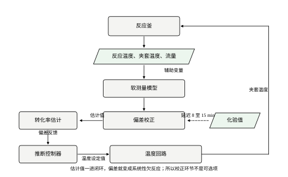
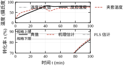
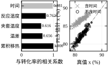
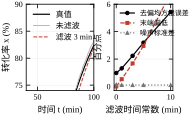
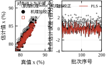
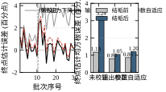
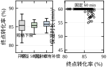
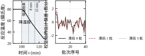
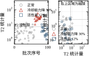

一台 5 m³ 的夹套搅拌釜，每釜投 1.0 kmol/L 的原料 5 m³，反应放热 4.0\times10^{5} kJ/kmol，出料时转化率决定这一釜料是正品还是回头料。可是转化率这个数，在釜上没有任何一块表能直接读出来。操作工能看到的是反应温度、夹套温度、夹套阀位，控制室能调的是夹套温度设定值。转化率要么等 8 到 15 分钟后在线色谱出峰，要么等几小时后的化验单。
这就是软测量要解决的问题：用能测的量，推出测不出来的量，并且推得足够准、足够快，准到可以进闭环。本章围绕这一件事展开，把机理型与数据型两条路线都走一遍，再把估计值送进温度回路，看它会带来什么、又会在什么地方出问题。
先把“测不出来”这四个字说清楚。不是完全没有手段，而是所有手段都太慢。
在线色谱从取样、汽化、分离到出峰，典型周期 8 到 15 分钟。本章的标称批次从升温 40 分钟、保温 60 分钟，保温结束时刻在第 100 分钟；滞后 8 分钟到达时是第 108 分钟，釜子已经在降温段了。实验室化验更慢，取样送样加上排队，两三个小时是常态。等到结果回来，这一釜料早就出完了。
温度却快得多。反应温度与夹套温度每 0.5 秒采一次，量测噪声分别只有 0.10 K 与 0.20 K。一百分钟的批次里，温度通道给出 12000 个采样点，而转化率通道只给出 0 到 1 个点。信息量相差四个数量级。
热量是转化率的账本。 反应放出的热量，一部分被物料显热吸收、体现为升温，一部分被夹套带走。只要知道通入夹套的冷却/加热量、进出口温度、物料热容，就能反算出“已经反应掉多少”。这条账不需要知道动力学，也不需要知道反应级数，它只依赖能量守恒。本章的机理软测量就是这本账。
实算一段。标称批次在保温 60 分钟结束时的真值转化率是 82.38%，由累积移热与显热累积反推得到 83.61%，相差 1.23 个百分点。同一釜料用偏最小二乘（PLS）从温度轨迹回归，得到 82.39%，几乎正中。两个模型一个偏高、一个几乎无偏，这个差别不是巧合，后面 §110.2 会解释它来自哪里。
再看一釜活性偏高 5% 的原料。真值终点 83.85%，机理给出 85.15%，PLS 给出 83.85%。机理模型的偏差从 1.23 扩大到 1.30 个百分点，基本不动；PLS 依然贴着真值。原因同样留到后面：机理模型量的是热量，动力学快慢不改变“放了多少热”，但它会改变“放热在时间上怎么分布”，而这个分布差异被标定误差掩盖了。
很多现场把软测量当成“虚拟仪表”来管理，这是第一个容易踩的坑。仪表坏了，换一支、重新标定零点量程；模型错了，换不了，只能重新采数据、重新训练、重新验证。二者的维护逻辑完全不同。
软测量至少有三条与仪表不同的性质。
第一，它有输入选择。仪表只有一个测点，软测量的输入是一组辅助变量，选哪几个、要不要做变换，是设计决策。本章的五个候选量是时间、反应温度、夹套温度、温差与累积移热；其中“时间”与转化率的相关系数高达 +0.981，看起来是极好的辅助变量，但它是伪变量，§110.2.2 会说明它怎样在活性偏移的批次上把估计带偏 4 个百分点以上。
第二，它有训练数据。数据驱动模型的外推能力完全由训练集覆盖范围决定。本章用 120 批正常批次建模，原料活性波动 6%、传热能力波动 2.5%、初始温度波动 0.5 K；超出这个范围的批次，模型没有任何理由可信。
第三，它的误差不是白噪声。仪表噪声可以靠滤波压下去，软测量的误差里有系统偏差，滤波只会把偏差原样保留、再叠上滞后。§110.8.3 会给出量化的代价：滤波时间常数从 0 加到 10 分钟，去偏 RMSE 从 0.98 涨到 5.43 个百分点，末端估计偏低从 0 恶化到 -6.82 个百分点。
图 110-1 给出本章的信号流。左侧是反应釜与它的可测变量，中间是软测量模型，右侧是估计值，下方虚线是滞后的化验值。化验值不参与当批估计，只用来更新偏差校正项，这条“虚线”是整章工程可行性的关键。

如果估计值只上画面、只进报表，偏 1 个百分点无非是数字不好看。一旦把它接进温度设定值，偏差就变成产品偏差，而且是系统性的、批批都一样的偏差。
道理很直白。推断控制器的工作是“把估计值推到目标”，它并不知道估计值本身有偏。假设真实转化率达到 84% 时模型报 85%，控制器看到 85% 就认为到点了，于是提前结束保温。结果是每一釜都少反应一点，批次分布整体左移。
本章 200 批的实测把这件事量化了。机理软测量未校正时，平均偏差 +1.09 个百分点（估计减真值），RMSE 1.24；加上批间偏差校正后，平均偏差降到 +0.01，RMSE 0.65。也就是说，未校正的机理模型有大约 1 个百分点的乐观偏差，这个量级足以让推断控制把终点均值从 85.2% 拉到 84.2%。
反过来，如果估计偏悲观，控制器会过度保温，把批次推向超温、超时、杂质上升。两种方向都不好，但现场更怕后者，因为它同时带来安全风险和品质风险。
还有一个反直觉的现象。推断控制把终点标准差从 1.83 压到 0.91 个百分点（增益 50、无补偿），分布明显变窄；可是均值并没有明显上移，仍是 85.33%。原因是估计偏差与真值偏差在闭环里相互抵消了一部分：活性高的批次估计偏高、被提前放行，活性低的批次估计偏低、被多保温一会儿，于是“看起来”分布很整齐。
这个整齐是假的。它整齐在估计值上，真值上仍有 1 个百分点左右的系统偏差。图 110-2 上栏是温度轨迹，下栏是三条转化率曲线与 83%、88% 两条规格线；三条曲线在保温段几乎平行，机理那条整体高于真值，PLS 那条贴着真值，这就是偏差进闭环前的原始形态。

把上面的现象收拢，本章要回答五个问题。
其一，辅助变量怎么选。相关性高不等于可迁移，时间这类“批次进度代理”必须剔除，判据是什么。
其二，机理与数据两条路线各自适合什么场合。本章会给出一条容易写反的结论：机理软测量对动力学快慢不敏感，却对传热能力漂移极其敏感；传热能力降 8%，未校正 RMSE 从 1.18 涨到 3.24。
其三，估计有偏怎么办。批间偏差校正能把 1.09 压到 0.01，但它依赖滞后的化验值，而化验值本身有延迟、有噪声、可能缺批。
其四，估计值怎么进闭环。推断控制、按估计值放行是两种典型用法，前者连续调温，后者只改放行时刻，二者的风险完全不同。
其五，估计值坏了怎么知道。末点主元分析的 T^2 与 Q 能检出冷却能力下降 30%(20/20)，却几乎检不出原料活性偏高 12%(2/20)；这条“能检什么、不能检什么”的边界必须写进操作规程。
本章与相邻章的分工需要说明白。温度回路本身的整定见第 44 章与第 106 章，本章把它当作已经调好的内环，只讨论设定值怎么给。以模型预测控制实现的多变量协调见第 58 章与第 80 章，本章的推断控制是最简单的单变量版本，不涉及滚动优化。纯滞后补偿见第 47 章与第 107 章，本章的化验延迟不是控制通道的滞后，而是校正通道的滞后，处理方式不同，不能照搬 Smith 预估器。
后面所有数字都来自同一台釜、同一条温度曲线，先把时间线交代清楚，读表时不容易对错。
第 0 到 40 分钟是升温段：釜温从 20 摄氏度按 1.5 K/min 升到 80 摄氏度。这一段反应已经开始，放热随温度指数上升，夹套从加热切到冷却往往就发生在这段的后半程。第 40 到 100 分钟是保温段：设定值恒定 80 摄氏度，转化率从大约一半爬到 82.38%。第 100 到 125 分钟是降温段：釜温降到 30 摄氏度准备出料，这一段反应基本停止，但软测量仍在积分，所以降温段的估计值只能作为参考。
整釜料的完全放热是 2.0\times10^{6} kJ，末点时已经放出约 82%，剩 18% 留在物料里。夹套温度允许范围是 5 到 95 摄氏度，这个范围决定了推断控制的设定值限幅不可能更宽。采样周期 0.5 分钟，一百分钟对应 200 个采样点。
控制系统是串级加前馈：外环给温度设定值，内环调夹套阀位，前馈用设定值斜率预判需要多少热量。这套结构见第 44 章与第 106 章，本章只在外环的设定值上做文章。
还有一项要说清楚：本章的能量账是简化账。搅拌功、釜体向环境的散热、加料的显热与溶解热都没有进方程。它们在正常工况下是小量——搅拌功约占总放热的千分之几，环境散热在保温段也只有几 kW——但两项的符号相反，会部分抵消，所以不写进方程也不会造成可观偏差。真正会把账算错的是相变与大量惰性气体吹扫，这两种情况在 §110.11.5 里单独列出来了。工程上判断“简化账够不够用”的办法是做一次能量闭合检查：用真实 UA 与真实温度按式 (110-3) 反算末点转化率，与化验值比，差在 1 个百分点以内就说明简化可以接受。
为避免混淆，把反复出现的符号一次列清。
x 是真实转化率，只在仿真里已知，现场拿不到；\hat x 是软测量的估计值；\hat b 是批间偏差的估计，用来把 \hat x 修正到无偏；K_{inf} 是推断增益，单位 K 每单位转化率；\lambda 是偏差校正的遗忘因子；\tau_f 是估计值滤波的时间常数，本章的结论是不用它；T^2 与 Q 是末点主元分析的两个统计量。
对象参数用大写：V 是装料体积，C_{heat}=V\rho c_p 是总热容，UA 是传热能力，(-\Delta H) 是反应热，C_{A0} 是初始浓度。估计时用的传热能力记作 UA_{model}，它与真值 UA 的差别正是机理软测量系统偏差的主要来源。
本节把两条建模路线写成公式，再把校正与闭环接上去。读的时候请始终抓住一条主线：机理模型算的是能量账，数据模型算的是统计相关，校正项补的是两者的系统偏差，闭环把这四样东西串成一个回路。
设釜内物料体积 V、密度与比热容的乘积 \rho c_p，夹套向釜内传热的总系数 UA，反应温度 T_m(t)，夹套温度 T_j(t)。主反应放热 (-\Delta H)，初始反应物浓度 C_{A0}。
先写累积移热，也就是从开车到现在夹套总共从釜里搬走了多少热：
Q_{rem}(t)=\int_0^t UA\,\bigl[T_m(\tau)-T_j(\tau)\bigr]\,\mathrm{d}\tau \tag{110-1}
再写显热累积，也就是物料从初始温度升到当前温度吃掉了多少热：
Q_{sen}(t)=C_{heat}\,\bigl[T_m(t)-T_m(0)\bigr],\qquad C_{heat}=V\rho c_p \tag{110-2}
反应放出的总热量等于这两项之和，而总热量又等于已反应的摩尔数乘以反应热。于是转化率的估计式为
\hat x(t)=\frac{Q_{rem}(t)+Q_{sen}(t)}{(-\Delta H)\,C_{A0}V} =\frac{\displaystyle\int_0^t UA[T_m-T_j]\,\mathrm{d}\tau+C_{heat}[T_m(t)-T_m(0)]}{(-\Delta H)N_{A0}} \tag{110-3}
本章的数值是 V=5.0\ \mathrm{m^3}、\rho c_p=4.0\times10^{3}\ \mathrm{kJ/(m^3\cdot K)}，所以 C_{heat}=2.0\times10^{4}\ \mathrm{kJ/K}；C_{A0}=1.0\ \mathrm{kmol/m^3}，N_{A0}=5.0\ \mathrm{kmol}；(-\Delta H)=4.0\times10^{5}\ \mathrm{kJ/kmol}，分母 (-\Delta H)N_{A0}=2.0\times10^{6}\ \mathrm{kJ}。也就是说，整釜反应物全部转化会放出 200 万千焦，这个数与两个分子的量直接对应。
这里用的是累积量而不是瞬时量，原因有两层。第一层是噪声：瞬时放热由温度对时间的导数算出，量测噪声被微分放大，保温段温度几乎不变时更是除以一个接近零的数。累积量的噪声按平方根增长，而信号按线性增长，信噪比随时间是改善的。第二层是初值：累积量天然从零开始，不需要知道反应起始时有多少反应物已经转化；瞬时量则必须知道每一时刻的速率，任何一段缺失都会在下游留下永久缺口。
代价是累积量有“记忆”，一旦前面算错，误差会一直留在账上，后面无法自行修正。这解释了为什么本章的机理软测量一定要配一个批间校正，也解释了为什么 §110.5.1 里一个离散化错位能凭空造出 3 个百分点——错在第一步，后面两百步都在替它累积。
式 (110-3) 的成立依赖四条假设，每条都要在文档里写明，因为它们决定了模型什么时候会失效。
其一，单一主反应且无相变。 若副反应放热占比不可忽略，热量账算出来的是“总放热对应的等效转化率”，而不是主产物转化率。本章的对象是单反应，这条成立。
其二，热容恒定。 C_{heat} 随温度与组成变化，本章在 20 到 80 摄氏度范围内按常数处理，误差约百分之几，这个误差会整体缩放估计值，正好由 §110.2.3 的偏差校正吸收。
其三，搅拌充分、釜内无温度分层。 若釜内有大温差，单点测温不能代表整体，Q_{sen} 会被低估。工程上要求搅拌雷诺数足够、测温点浸没在主流区。
其四，UA 已知且不漂移。 这一条最要命。UA 出现在积分号里面，它偏 5%，Q_{rem} 就整体偏 5%，而 Q_{rem} 在总热量里占大头。本章故意让机理模型用 UA 偏高 5% 的标定值，于是 200 批的估计出现 +1.09 个百分点的系统偏差；传热能力再降 8%，未校正 RMSE 从 1.18 涨到 3.24。机理软测量不是“装上就准”，它需要定期重新标定传热能力。
实现时还有一处符号约定必须先定死：T_m-T_j 为正表示夹套在冷却釜内，Q_{rem} 为正表示热量被移出。升温段夹套比釜温高，这个差是负的，积分出来是“负移热”，也就是夹套在向釜内供热。式 (110-3) 的分子里两项一正一负地组合，正好还原成“反应放出了多少热”。如果实现时把温差写反（T_j-T_m），升温段就会变成“反应放出巨量热”，估计值冲到几百个百分点。这类错误在调试时的表现是“曲线形状对、数值离谱”，查符号比查参数快。
数据型路线不写能量方程，直接把辅助变量矩阵 X 回归到化验得到的转化率 y。问题是 X 的各列高度相关：时间与累积移热的相关系数是 +0.981，反应温度与夹套温度是 +0.616。普通最小二乘在这种共线性下会给出数值上爆炸、符号上乱跳的系数，不能用。
偏最小二乘的做法是先把 X 与 y 各自投影到一组互相正交的潜变量上，再在潜变量空间做回归。单因变量的 PLS1 用 NIPALS 迭代，每一步做五件事。
先找权重方向，让它与 y 的协方差最大：
w=\frac{X^{\mathrm{T}}y}{\lVert X^{\mathrm{T}}y\rVert} \tag{110-4}
再把样本投影到该方向得到得分向量：
t=Xw \tag{110-5}
然后分别回归 X 与 y，得到载荷与系数：
p=\frac{X^{\mathrm{T}}t}{t^{\mathrm{T}}t},\qquad q=\frac{y^{\mathrm{T}}t}{t^{\mathrm{T}}t} \tag{110-6}
接着从 X、y 中扣除这一主元解释掉的部分：
X\leftarrow X-tp^{\mathrm{T}},\qquad y\leftarrow y-tq \tag{110-7}
重复上述四步，直到取够 a 个主元。最后把各主元的权重与载荷拼成回归系数：
\beta=W\bigl(P^{\mathrm{T}}W\bigr)^{-1}Q \tag{110-8}
其中 W、P、Q 分别是各主元权重、载荷、系数的按列拼接。预测时只需 \hat y=X\beta。
本章取 a=3，理由是 120 批训练集上前三个主元已解释 y 方差的 98.6%，第四个主元带来的增益小于噪声水平。主元数不是越多越好，多一个主元就多一组要外推的方向，训练集没覆盖到的方向一旦被用上，预测就会失控。
主元数不能只靠“解释了多少方差”来定，那是一个只增不减的量，加到第几个都能说“又多了 0.3%”。真正该看的是一条按批分组的交叉验证曲线。分组的方式很关键：不能把样本随机分成六折，因为同一批的相邻样本高度相关，随机分折等于把同一条曲线的相邻段一半放训练、一半放验证，验证误差会虚假地低。正确做法是以批为单位分折，本章 120 批分六折，每折 20 批，训练折里绝不出现验证批的任何采样点。
按这个方式实测，六折合并的验证 RMSE 是：1 个主元 13.28、2 个主元 1.49、3 个主元 0.60、4 个主元 0.66、5 个主元数值爆炸。这条曲线的形状很有代表性。1 个主元时误差高达 13 个百分点，说明单一方向只能描述“反应走了多远”，缺少描述“温度走得对不对”的维度。2 个主元降到 1.49，仍然不够进闭环。3 个主元降到 0.60，与建模集内的 0.58 几乎一致，说明没有过拟合。4 个主元回升到 0.66，多出来的那个方向学的是噪声。到 5 个主元时结果变成 10^{14} 量级，原因是 P^{\mathrm{T}}W 接近奇异，式 (110-8) 里的求逆把舍入误差放大成了天文数字。
最后这一条值得单独记一笔。PLS 的失效往往不是“精度慢慢变差”，而是“突然给出一个荒谬的数”。现场看到估计值跳到几千个百分点，第一反应容易去查仪表，实际上是主元数给多了、矩阵病态。工程上要加两道保险：主元数不超过训练集样本参数比允许的范围，且预测值进入 DCS 之前必须有限幅（本章夹在 0 到 1.05 之间）。
两个实现细节。第一，标准化用的均值与标准差只能来自训练折，验证折的数据在建模阶段一概不能看；本章的代码是先把 120 批的标准化参数算好再分折，这在工程上可以接受（标准化参数不携带 y 的信息），但如果做严格的模型选择，应该逐折重算。第二，单因变量时 NIPALS 的权重方向有闭式解 w\propto X^{\mathrm{T}}y，不存在“迭代是否收敛”的问题；这里的循环是逐个主元往前推，不是在同一主元上反复迭代。把这两件事分清，读代码时就不会误以为少写了一层收敛判断。
PLS 的系数可以标准化后比较重要性。全变量模型的标准系数是：累积移热 +0.1777、时间 +0.1403、夹套温度 -0.0186、温差 +0.0079、反应温度 -0.0068。前两个占了绝大头。可是“时间”的系数不该存在，原因见 §110.9.1。
机理模型有偏、数据模型也会因工况漂移而有偏，最省事的补法是在估计值上加一个偏差项：
\hat x_{c}(t)=\hat x(t)+\hat b_k \tag{110-9}
其中 \hat b_k 是第 k 批的偏差估计。它只能用已经出结果的过去批次来算，绝不能看当批的化验值，否则就是作弊。递推形式取指数加权：
\hat b_k=\lambda\bigl(x_{true,k-1}-\hat x_{k-1}\bigr)+(1-\lambda)\,\hat b_{k-1} \tag{110-10}
展开后可以看出它是几何加权和：
\hat b_k=\lambda\sum_{j=0}^{k-2}(1-\lambda)^{j}\,e_{k-1-j},\qquad e_i=x_{true,i}-\hat x_i \tag{110-11}
\lambda 越小，记忆越长、越稳、越迟钝。\lambda=0.3 对应的有效记忆约 1/\lambda\approx3.3 批：大约三批之前的化验结果还有三分之一权重，更早的基本被忘掉。这个数不是拍出来的，§110.8.2 会给出选择依据。
校正的效果很直接。机理模型 200 批未校正的平均偏差 +1.09、RMSE 1.24；加上 \lambda=0.3 的校正后，平均偏差 +0.01、RMSE 0.65。偏差被完全吃掉，剩下的 0.65 是批内随机误差与校正滞后共同造成的。
推断控制的思想只有一句话：既然转化率调不了、只能通过温度间接影响，那就把温度设定值做成转化率估计值的函数。
设标称轨迹给出的期望转化率 \hat x_{ref}(t)，当前估计 \hat x(t)，偏差校正 \hat b，则
T_{sp}(t)=T_{sp,0}(t)+K_{inf}\bigl[\hat x_{ref}(t)-\hat x(t)-\hat b\bigr] \tag{110-12}
T_{sp,0}(t) 是原有的升温、保温、降温轨迹，K_{inf} 是推断增益，单位是 K 每单位转化率。估计偏低时括号为正，设定值抬高，反应加快；估计偏高时设定值压低，反应放慢。
式 (110-12) 里没有积分项，因为积分作用已经由 \hat b 承担了：\hat b 就是“批与批之间的积分”，它把稳态偏差消掉，而批内的快速偏差由比例项处理。如果在式 (110-12) 里再加一个批内积分器，两者会打架，表现为保温段温度缓慢爬升或下沉。
第二种用法不改温度轨迹，只改放行时刻：
t_{rel}=\min\bigl\{t\ \big|\ t\ge T_{ramp},\ \hat x(t)+\hat b\ge x_{target}\bigr\} \tag{110-13}
这就是“按估计值放行”。它比连续调温温和得多：温度轨迹不动，只把保温段截短或延长。本章 x_{target}=0.84 时，保温从固定 60 分钟降到平均 58.9 分钟，范围 53.0 到 60.0 分钟。
软测量给出一个数，还得给出“这个数今天是否可信”。做法是把每批的末点特征向量 z（本章取反应温度、夹套温度、累积移热三个量，标准化后）投影到正常批次的主元空间，算两个统计量。
Hotelling 的 T^2 度量样本在主元平面内偏离中心多远：
T^2=\sum_{i=1}^{a}\frac{s_i^2}{\lambda_i} \tag{110-14}
s_i 是第 i 个得分，\lambda_i 是该主元的特征值。Q 统计量（也称 SPE）度量样本落在主元平面之外的分量有多大：
Q=\bigl\lVert z-Ps\bigr\rVert^{2} \tag{110-15}
P 是载荷矩阵，s 是得分向量。T^2 超限说明工况在正常范围内“走偏了”，Q 超限说明出现了正常批次从未有过的相关结构。
两个控制限都用独立验证集定：本章另抽 300 批正常批次，取 95% 分位，得 T^2 限 7.29、Q 限 2.7780。不能拿建模数据自己定限，否则限值天然偏窄，误报率会远高于名义的 5%。用独立集定限后，120 批正常批的实测误报是 T^2 10 批（8.3%）、Q 6 批（5.0%），Q 的误报率正好落在名义值上，T^2 偏高一些，因为末点特征不完全是高斯分布。
把估计误差拆成三块，后面调参时才知道该动哪一个。均方误差可以写成
\mathrm{MSE}=\bar e^{2}+\sigma_{e}^{2},\qquad \bar e=\overline{x-\hat x}
第一项是系统偏差，第二项是随机方差。本章机理模型未校正时 RMSE 1.24、平均偏差 1.09，反解出随机部分：
\sigma_e=\sqrt{1.24^{2}-1.09^{2}}=\sqrt{1.5376-1.1881}\approx0.59
也就是说，1.24 的总误差里，1.09 是系统偏差，占均方误差的 77%；随机部分只有 0.59。这个比例决定了应对手段：先消偏差，再谈降噪。加滤波、加平滑、换更贵的变送器，动的都是那 0.59，最多把总误差压到 0.6 附近；而消掉偏差能把 1.24 直接砍掉一半。
校正后的实测印证了这一点：RMSE 0.65、平均偏差 0.01，随机部分 0.65。系统偏差被完全吃掉；剩下的 0.65 比 0.59 略高，多出来的是校正本身的滞后——校正项用的是上一批的误差，跟不上当批的随机波动。
第三块误差是滞后，它不计入上面的分解，因为它不是“值错了”，而是“值来晚了”。滞后在稳态下看不出来，在斜坡上会变成实实在在的偏差：保温段转化率以每分钟约 0.35 个百分点上升，滞后 3 分钟就是 1.05 个百分点的落后。§110.8.3 的滤波实验测的就是这一块。
三块误差的应对手段完全不同。偏差靠校正或参数自适应；方差靠更好的仪表或更多的平均；滞后只能靠“不用滞后的值”，也就是本章不建议加滤波的原因。
软测量项目失败，多数不是算法选错，而是顺序错了：先挑模型、再找数据、最后才想“这个数拿去干什么”。本节给出一条从用途倒推的流程，共六步，每一步都有可检查的产出。
第一步，定用途。 这个估计值是只上画面、只做放行判据，还是要进温度闭环？三种用途对精度的要求差一个量级，先定下来，后面的建模精度目标才有依据。
第二步，搭机理基座。 即使最终要用数据模型，也建议先把能量账算出来。它给出一个物理上可解释的基线，也给数据模型提供一个极强的辅助变量（累积移热）。本章的机理基座就是式 (110-3)。
第三步，选辅助变量并建数据模型。 按 §110.3.3 的四条判据筛，剩下的做 PLS1，主元数用交叉验证定。
第四步，接化验值做校正。 这一步决定了模型能不能长期用。核心是把“化验结果什么时候到、缺批怎么办、结果异常怎么剔”写成规则。
第五步，接闭环。 从最温和的接口开始：先只显示，跑两周；再改放行，跑两周；最后才动温度设定值。
第六步，上监控。 T^2、Q、偏差序列、缺批率四个指标进日报，任何一个越界都要有人看。
六步的产出分别是：一份用途与精度要求说明、一个机理模型与它的标定参数、一个带变量清单的 PLS 模型文件、一份校正规则、一张闭环接口图、一张监控画面。缺任何一份，项目都不算交付完成。
精度要求不能笼统说“越准越好”，要按用途给数。本章的建议门槛如下。
只做画面显示与班组参考，RMSE 控制在 2 个百分点以内即可。班组的操作粒度本来就在几个百分点，再准也用不上。
做放行判据，RMSE 要压到 1.0 个百分点以内。放行判据直接决定保温什么时候停，误差会一比一传到终点分布上。
进温度闭环，RMSE 要压到 0.7 个百分点以内。原因是闭环会把估计误差当成真实偏差去修正，误差越大，温度设定值被推得越远，§110.6.1 会给出稳定性的量化边界。
本章的机理模型未校正是 1.24，只够做显示；校正后 0.65，够做闭环。PLS 去时间后 0.58，也够。这两个数就是后面所有结论的分界线。
这三个门槛还有一个容易被忽略的推论：用途不仅决定精度，还决定验证方式。只做显示时，抽十批看看曲线像不像就够了；做放行判据时，必须按批统计尾部，因为放行判据关心的是“最差的那批会不会提前停”；进闭环时，还要额外看误差的时间结构，也就是误差是缓慢漂移还是逐拍跳动，前者会被闭环当成真实偏差去追，后者会被温度回路平均掉。
验证时的统计口径要写清楚。按样本算 RMSE 与按批算 RMSE 不是一回事：本章每批 51 个采样点，同一批内部的误差高度相关，按样本算等于把一条曲线数了 51 遍，得到的数会明显偏小。对外承诺的精度必须按“每批一个末点误差”来算，这也是表 110-1 的口径。如果两份报告的数差得远，先查口径，再查模型。
最后一个动作是把精度指标写进验收单，并明确“超差怎么办”。本章的建议是：连续五批末点误差超过 1.5 个百分点，自动降级到只显示；连续二十批都在 0.8 以内，才允许恢复闭环。没有这条规则，模型退化时没人会发现，因为画面上的数永远那么平滑。
相关性高不等于能当辅助变量。本章五个候选量与转化率的相关系数是：累积移热 +1.000、时间 +0.981、反应温度 +0.762、温差 +0.656、夹套温度 +0.616。如果只看这张表，时间几乎是最佳选择；实际上它是最坏的选择。
判据有四条。
其一，因果性。 辅助变量必须处在“操作变量到转化率”的因果链上，而不是“时间流逝”的代理。累积移热是能量账的一部分，因果上直接决定转化率；时间只是批次走到哪一步的刻度，任何加快或放慢都会让它指向错误的转化率。
其二，可测性与可靠性。 变送器要长期稳定，不能三天两头漂。反应温度用的是双支铂电阻、夹套温度用铠装热电偶，都属于成熟配置；如果某个候选量依赖易结垢的流量计，它的可靠性就要打折扣。
其三，覆盖范围。 训练集里这个量必须有足够变化，否则模型学不到它的作用。本章夹套温度在 5 到 95 摄氏度之间随工况大幅变化，覆盖充分；而“时间”在保温末点恒等于 100 分钟，方差为零，用它对末点建模会直接让标准化除零。
其四，独立信息量。 两个高度相关的量同时入模，只会让系数分配变得任意。反应温度与夹套温度相关 +0.616，温差是二者的差，三者高度冗余；本章在末点建模时只保留反应温度、夹套温度、累积移热三个量，就是这个道理。
按这四条筛完，本章的入模变量是反应温度、夹套温度、温差、累积移热四个，“时间”被剔除。剔除前后标准化系数的对比很说明问题：含时间时累积移热 +0.1777、时间 +0.1403，两者几乎平分；去掉时间后累积移热升到 +0.2974，其余三个都掉到 0.004 以下。也就是说，时间在模型里起的作用主要是“替累积移热分担了一部分解释”，它不提供新信息，只稀释了本应属于物理量的权重。
图 110-3 左边是五个变量的相关系数横条，时间那条被标成灰色；右边是含时间与不含时间两个 PLS 的 parity 对比。含时间的点在正常批次上贴着对角线，看起来很好；本章 §110.9.1 会拿它在活性偏移批次上的表现来说明“贴着对角线”有多不可靠。

数据采集有五条硬规则，任何一条破例都会让模型带上无法追溯的偏差。
规则一，只采正常批次。 故障批、试验批、手动干预批一律不进训练集。本章训练集 120 批，全部是自动运行、无报警、化验合格的批次。
规则二，覆盖正常波动的全范围。 本章的设定是原料活性波动 6%、传热能力波动 2.5%、初始温度波动 0.5 K。这个范围要来自历史统计，不能凭感觉放大。放大范围会让模型学到一个“平均而言更宽容”的关系，实际预测反而变差。
规则三，化验值与批号严格对齐。 取样时刻要记录到秒，化验单要回填批号。现场最常见的错误是把上一批的化验值配到这一批上，这种错位不会报错，只会让模型悄悄变差。
规则四，缺批不补零。 化验缺失就标记缺失，让校正器跳过这一批继续用上一批的偏差估计，不要插值、不要补零。补零会让偏差估计瞬间跳变，比不校正更糟。
规则五，留出独立验证集。 建模用 120 批，定控制限另抽 300 批，两者不能重叠。本章的 T^2、Q 控制限就是用这 300 批定的，误报率才落在名义值附近。
除了这五条，还有三个采集参数要在开工前定下来，它们直接决定训练集的形状。
采集窗口。 本章取升温开始到保温结束，也就是 0 到 100 分钟，不含降温段。原因是降温段转化率基本不再变化，反应速率已经很低，把这段放进训练集只会让模型学到“时间越长转化率越高”的伪关系。更实际的理由是：降温段的夹套大流量冷却会让温差剧烈变化，这一段的热平衡信噪比最差。
抽稀步长。 仿真步长是 0.5 分钟，但训练集按 2 分钟抽一个点，每批 51 个样本。抽稀的理由是样本自相关：相邻两个采样点的温度差不到 0.1 K，信息几乎重复，全放进去只会让样本数虚高、矩阵条件数变差。抽到 2 分钟后，相邻点仍有相关性，这也是为什么交叉验证必须按批分组而不能按样本分组。
有效样本数。 名义上 120 批乘 51 点等于 6120 个样本，但真正独立的信息量接近批数而不是样本数。按批分组交叉验证给出的 0.60 才是可信的泛化误差；如果按样本随机分折，同一批的点散落在训练与验证两侧，得到的数会好得离谱。这一点在 §110.2.2 已经用实测说明。
接口按风险从低到高排，不要跳级。
一级是只显示。软测量算出来只上画面，操作员自己决定是否参考。这一级的风险是“没人看”，所以要配一条规则：班组交接必须记录当前估计值与化验值的偏差。
二级是改放行。保温结束不再看固定计时，而看估计值是否到目标。本章 x_{target}=0.84 时，保温均值 58.9 分钟、范围 53.0 到 60.0 分钟，比固定 60 分钟略短。这一级的风险是“估计偏高导致提前放行”，所以必须配一条下限：保温不得短于 50 分钟，宁可多反应也不许跳过。
三级是改设定值。推断控制器直接改温度设定值，本章式 (110-12)。风险最高，因为它同时改变温度轨迹与反应进程。上线前必须做两件事：把增益从 0 逐步加到目标值，每次加完跑至少 20 批看分布；把设定值的上下限写死，本章限在 74 到 86 摄氏度。
验收不看单批曲线好不好看，看五个统计量：RMSE、平均偏差、最大偏差、决定系数 R^2、超差批次数。表 110-1 是本章 200 批的实测。
表 110-1 200 批终点估计精度对比（误差单位：百分点）
| 方法 | RMSE | 平均偏差 | 最大偏差 | R^2 |
|---|---|---|---|---|
| 机理 | 1.24 | +1.09 | 2.77 | +0.5324 |
| 机理 + 批间校正 | 0.65 | +0.01 | 1.71 | +0.8698 |
| PLS（全变量） | 4.51 | +4.41 | 7.39 | −5.1748 |
| PLS（去时间） | 0.58 | −0.11 | 1.57 | +0.8991 |
| 机理与 PLS 各半 | 0.75 | +0.49 | 2.08 | +0.8269 |
表里最重要的不是最小的那个 0.58，而是三件事。第一，机理未校正的偏差 +1.09 与真值离散度 1.82 同量级，所以它的 R^2 只有 0.53；校正后偏差归零，R^2 立刻升到 0.87。第二，PLS 含时间时 R^2 是负的，说明它比“直接用平均值猜”还差。第三，融合没有带来增益，0.75 反而比单一 PLS 的 0.58 差，原因见 §110.9.1。
验收时还有一个容易被忽略的指标：最大偏差。批次生产最怕的不是平均偏 0.3，而是某一批偏 3。机理校正后的最大偏差 1.71，PLS 去时间 1.57，都在可接受范围；未校正机理 2.77、含时间 PLS 7.39，都不能上线。
验收报告还要附三样东西，否则数字无法复核。第一是留出批的清单，含批号与化验值，别人可以重算一遍。第二是统计口径的说明：按末点还是按样本、按批还是按点、误差是“估计减真值”还是反过来。第三是参数快照，把当时的模型文件、UA、\lambda、K_{inf} 一起归档。没有这三样，半年后想复现表 110-1 只能重跑，而重跑的结果未必一致——种子、数据版本、清洗规则任何一处不同都会让末位小数变。
本章的仿真对象是间歇釜，但软测量的原理在连续流程里同样成立，只是“账”的写法要换。连续情形值得单独讲一节，因为现场大量软测量是装在连续装置上的，而间歇与连续在三个地方有本质差别：热平衡没有累积项、校正没有“批”这个自然窗口、滞后变成了永久的死时间。
连续搅拌釜在稳态下，进料带着显热进来、出料带着显热带走、夹套带走一部分、反应放出一部分，四者平衡。设进料体积流量 F、进料温度 T_{in}、进料浓度 C_{A0}，则
F C_{A0}\,x\,(-\Delta H)=UA\,(T_m-T_j)+F\rho c_p\,(T_m-T_{in}) \tag{110-16}
左边是反应放热速率，右边是夹套移热速率与进出料显热速率之和。解出转化率：
\hat x=\frac{UA\,(T_m-T_j)+F\rho c_p\,(T_m-T_{in})}{(-\Delta H)\,F C_{A0}} \tag{110-17}
和间歇的式 (110-3) 比，最大的区别是没有积分号。间歇要把从开车到现在的热量一路累加，连续只看当前这一瞬间的通量。这带来两个后果。
好处是没有累积误差。间歇模型里 UA 的偏差会随时间线性累积，跑得越久偏得越多；连续模型只受当前时刻的 UA 影响，偏差不累积，只随工况瞬时变化。
坏处是没有记忆，噪声直接进结果。间歇模型里积分本身就是低通滤波，几百个采样点累加一次，随机噪声被压得很小；连续模型用的是瞬时温差 T_m-T_j，两个通道的噪声直接相减再放大。本章的噪声水平是 0.10 K 与 0.20 K，温差上的合成噪声约 0.22 K，乘以 UA=2000 就是 440 kJ/min 的移热噪声，折算成转化率约 2.2 个百分点。这个量级已经接近间歇模型校正后的 RMSE，所以连续情形必须滤波，而滤波又带来滞后，这是连续软测量的主要矛盾。
连续情形下，推断控制的被控量仍是估计转化率，操纵量仍是温度设定值，但两者之间的稳态增益可以直接从式 (110-16) 求出来。把 x 对 T_m 求偏导，保持 T_j、T_{in}、F 不变：
\frac{\partial x}{\partial T_m}=\frac{UA+F\rho c_p}{(-\Delta H)\,F C_{A0}} \tag{110-18}
代入一组典型数：F=0.05\ \mathrm{m^3/min}、\rho c_p=4.0\times10^{3}\ \mathrm{kJ/(m^3\cdot K)}、UA=2000\ \mathrm{kJ/(min\cdot K)}、C_{A0}=1.0\ \mathrm{kmol/m^3}、(-\Delta H)=4.0\times10^{5}\ \mathrm{kJ/kmol}。分子是 2000+200=2200，分母是 4.0\times10^{5}\times0.05=2.0\times10^{4}，于是
\frac{\partial x}{\partial T_m}\approx\frac{2200}{2.0\times10^{4}}=0.11\ \mathrm{K^{-1}} \tag{110-19}
也就是反应温度每升 1 K，转化率涨 11 个百分点。这个数比很多人直觉的大，原因是夹套传热系数 UA 比物料显热通量 F\rho c_p 大一个数量级：温度一升，夹套要多带走大量热量，这部分热量只能由更多的反应来补。反过来说，连续釜的温度是极其灵敏的操纵变量，推断增益不能照搬间歇的数。
式 (110-18) 还说明一件事：增益随流量变化。F 减半，分母减半，灵敏度翻倍。所以连续流程里的推断增益必须做流量补偿，常见写法是把 K_{inf} 乘上 F/F_0，否则降负荷时回路会变得过于激进。
连续流程里的分析仪滞后是真正的死时间：物料从取样点到分析仪，中间有一段纯输运，这段时间里发生了什么完全不知道。处理死时间的标准工具是 Smith 预估器，见第 47 章与第 107 章，这里不重复。
需要强调的是，校正通道的滞后不能用 Smith 预估器补偿。原因很简单：Smith 预估器需要知道“这段时间里操纵量做了什么”，而化验值对应的是过去某一时刻的工况，那一时刻的操纵量历史确实知道，但被控量（转化率）的当前值并不能由那段历史唯一确定，因为中间还夹着原料活性、传热能力这些未测扰动。用一个只对操纵量敏感的模型去补一段被未测扰动主导的空白，补出来的东西没有意义。
工程上的做法是把校正通道当成一个低频回路，不去追它。具体说，连续情形用时间常数形式的偏差校正：
\frac{\mathrm{d}\hat b}{\mathrm{d}t}=\frac{1}{\tau_b}\bigl(x_{true}(t-\theta)-\hat x(t)-\hat b(t)\bigr) \tag{110-20}
其中 \theta 是化验滞后，\tau_b 是校正时间常数。\tau_b 要远大于 \theta，通常取 8\theta 到 20\theta。若 \theta=10 min，\tau_b 取 80 到 200 min。这个取值意味着校正器对单个化验值的响应很弱，需要连续几个结果才能把偏差拉过来，但好处是单个异常化验值不会把整个回路带偏。
式 (110-20) 离散化后就是间歇的式 (110-10)，对应关系是 \lambda=1-\mathrm{e}^{-\Delta t/\tau_b}。当 \Delta t 是一批的周期、\tau_b 取三批时，\lambda\approx0.28，正好落在本章用的 0.3 附近。两条路线的参数其实是一回事，只是计量单位不同。
连续情形的校正还有两个间歇没有的问题。
其一，化验值要聚合。 间歇的一批只有一个末点化验值，天然对应一个估计。连续装置每 8 分钟出一个化验值，如果每个值都单独用来更新偏差，校正器就会被单点噪声牵着走。做法是按时间窗聚合：取一个 \tau_b 长度的窗口，窗内所有化验值与对应的估计值先各自平均，再算一个偏差样本。窗口内样本数少于 4 个时不出结果，等下一个窗。
其二，死时间要实测，不能照抄样本前处理时间。 现场说的“分析周期 10 分钟”往往只是仪器跑一个样的时间，真正的死时间还包括取样管线输运、取样阀切换、样品预处理。这一段经常被漏掉，而它可能是总滞后的一半。实测方法很朴素：在取样点上游打一次示踪（或改一次进料配比），记录分析仪读数开始变化的时刻，差值就是死时间。这个数每周核对一次，取样管线堵塞会让它无声地变长。
校正时间常数与死时间的比值取 8 到 20，理由与间歇的 \lambda 相同：比值太小，校正器会去追一个已经过时的结论，形成“化验值一抖、设定值就动”的连锁；比值太大，漂移跟不上，残余偏差会累积到几个百分点。如果死时间的实测值在变（管线逐渐堵塞），\tau_b 要按最坏情况定，并按月复查。
把差别收进一张表。表 110-2 的每一行都对应一个设计决策，做连续项目时逐行核对，能避免把间歇的经验直接搬过去。
表 110-2 连续与间歇软测量的对照
| 项目 | 间歇 | 连续 |
|---|---|---|
| 热平衡形式 | 累积移热 + 显热累积 | 瞬时移热 + 进出料显热 |
| 记忆 | 积分自带低通，噪声小 | 无记忆，噪声直接进结果 |
| 校正窗口 | 一批一个化验值 | 按时间窗或产量窗聚合 |
| 主要扰动 | 批间原料活性、传热能力 | 进料组成、流量、传热能力 |
| 控制器灵敏度 | 与反应进度有关，随批变化 | 与流量有关，需流量补偿 |
| 典型失效 | 积分漂移、初值误差 | 噪声放大、死时间失配 |
最下面一行值得展开。间歇软测量的典型失效是积分漂移：UA 偏一点、初值记错一点，误差就一路累加，跑到批末变成几个百分点。连续软测量的典型失效是噪声放大：瞬时温差本身很小（保温段只有几 K），两个通道的噪声一减，信噪比立刻恶化，再乘上 UA 就变成可观的移热噪声。
拿式 (110-17) 做一次正向与反向的核对，可以看清连续软测量的敏感度。
先正向。设进料 F=0.05\ \mathrm{m^3/min}、T_{in}=20 摄氏度、C_{A0}=1.0\ \mathrm{kmol/m^3}，反应温度 80 摄氏度，要求转化率 85%。代入式 (110-17) 反解夹套温度：
0.85\times2.0\times10^{4}=2000\,(80-T_j)+200\times(80-20)
左边是 1.7\times10^{4} kJ/min，右边的显热项是 1.2\times10^{4} kJ/min，剩下 5000 kJ/min 要由夹套带走，于是 80-T_j=2.5，即 T_j=77.5 摄氏度。这个结果说明：连续釜在 85% 转化率下，夹套只需要比釜温低 2.5 K，温差很小。
温差小正是噪声问题的根源。夹套温度的量测噪声是 0.2 K，相对 2.5 K 的温差是 8%；反应温度噪声 0.1 K 再叠上去，合成噪声是 \sqrt{0.1^{2}+0.2^{2}}\approx0.22 K。温差每差 1 K，转化率就差 2000/2.0\times10^{4}=0.10，也就是 10 个百分点，所以 0.22 K 的噪声直接对应 2.2 个百分点的估计噪声。这个数比间歇情形（0.13 个百分点）大一个数量级以上，所以连续软测量必须做时间平均，而且平均窗口要足够长。
再反向。如果现场测得 T_m=80.3、T_j=76.8，按式 (110-17) 算出的转化率是
\hat x=\frac{2000\times3.5+200\times60.3}{2.0\times10^{4}}=0.953
也就是 95.3%。而真值可能只有 85%。0.3 K 的温度偏差加上 0.7 K 的夹套偏差，就让估计偏了 10 个百分点。这不是公式错了，是连续软测量对温差的分辨率要求极高：要把误差控制在 2 个百分点以内，温差的测量误差必须小于 0.5 K。
这个算例给出一条设计准则：连续装置的软测量，先算温差的分辨率需求，再选仪表。如果算出来要求温差误差小于 0.2 K，而现有热电偶的配对误差就有 0.5 K，那么无论算法多好都没用，必须先解决仪表配对问题。
连续装置上做软测量，顺序与间歇不同：间歇可以先把模型跑起来、再慢慢标定，因为一批只有一百分钟，错了损失有限；连续装置一开就是几个月，模型带病运行的时间很长。建议按三步走。
第一步，做能量平衡闭合检查。 不做任何估计，只把“反应放热 = 夹套移热 + 进出料显热”这三项算出来，看残差有多大。残差应该是零均值的随机量，如果残差有系统性偏移，说明某个测点或某个物性参数错了。这一步通常要跑一周，因为它需要覆盖不同的负荷与不同的进料温度。
闭合检查的判据是：残差的标准差小于总放热速率的 5%。本章的算例里总放热速率是 1.7\times10^{4} kJ/min，5% 就是 850 kJ/min，折算成转化率约 4 个百分点。达不到这个判据，先别谈软测量。
第二步，定滤波窗口。 连续软测量的噪声是 2.2 个百分点（§110.4.5），要靠时间平均压下去。平均窗口 T 与噪声的关系是 1/\sqrt{T/\Delta t}，要把 2.2 压到 0.5，需要平均约 20 个采样点。若采样周期是 1 分钟，窗口就是 20 分钟；若采样是 1 秒，窗口是 20 秒。窗口确定后，滞后也就确定了，这个滞后要写进控制器的设计说明。
第三步，接闭环。 顺序与间歇一样：先显示、再放行、最后改设定值。连续装置的“放行”对应的是“切换产品罐”或“调整下游进料”，动作比间歇的放行更重，所以二级接口要更保守。
还有一条连续特有的注意事项：两个温度通道是否共用一个输入模块。如果共用，通道间的共模噪声会抵消一部分，温差噪声比独立估计的小；如果分属不同模块，噪声独立，必须按 §110.4.5 的合成公式算。这一点在仪表选型时就该定下来，事后改接线很麻烦。
最后把连续情形的验收重点收一下。间歇看的是“末端一个数”，连续看的是“长时间的平均与波动”：平均偏差反映标定质量，标准差反映噪声放大程度，两者的处理方式不同——前者靠重新标定或偏差校正，后者只能靠延长平均窗口或改进仪表。验收时至少连续采 24 小时数据，覆盖一次负荷变化，否则看不出流量补偿项是否接对。
公式写到纸上是积分，落到控制器里是求和。这一步转换看起来只是把 \int 换成 \sum，实际上藏着一个能让估计整体偏 3 个百分点的坑。本章在调试阶段就踩了这个坑，值得单独用一节讲清楚。
对象的温度更新是半隐式的：用上一时刻的反应温度、当前时刻的夹套温度算这一时刻的移热，再更新反应温度。写成差分是
T_{i}=T_{i-1}+\frac{\Delta t}{C_{heat}}\Bigl[(-\Delta H)N_{A0}\,\frac{x_i-x_{i-1}}{\Delta t}-UA\,\bigl(T_{i-1}-T_{j,i}\bigr)\Bigr] \tag{110-21}
软测量的求和必须用同一对温度：
\hat x_i=\frac{\displaystyle\sum_{k=1}^{i}UA\,\bigl(T_{k-1}-T_{j,k}\bigr)\Delta t+C_{heat}\bigl(T_i-T_0\bigr)}{(-\Delta H)N_{A0}} \tag{110-22}
注意 T_{k-1} 的下标是 k-1，T_{j,k} 的下标是 k。如果图省事全写成同一时刻 T_k 与 T_{j,k}，程序中不会报错，曲线也不会发散，但估计值会系统性偏高。
偏离量可以精确算出来。升温段从 20 摄氏度升到 80 摄氏度，用时 40 分钟，升温速率是 1.5 K/min；采样周期 0.5 min，所以每个采样步反应温度上涨 0.75 K。把 T_{k-1} 换成 T_k，等价于每一步多算 UA\times0.75\ \mathrm{K} 的温差，也就是 1500 kJ/min，乘 0.5 min 是每步 750 kJ。升温段共 80 步，累计多算 750\times80=6.0\times10^{4} kJ，正好是总放热 2.0\times10^{6} kJ 的 3.0%。
3 个百分点不是小数。本章标称批次的真值是 82.38%，错位的写法给出 85.37%；用这个数去放行，保温会提前将近 6 分钟结束。更麻烦的是这种错在正常批次上看起来“很稳定”——它每一批都偏 3 个百分点，偏差校正能把它吃掉，于是问题被掩盖，直到某个批次升温速率变了，偏差跟着变，校正追不上。
正确的写法在代码里只有一行，但必须在注释里写清理由，否则下一个人重构时会顺手“简化”掉：
# 用上一时刻的反应温度配当前时刻的夹套温度，与状态方程的更新方式一致；
# 否则离散化本身会凭空造出约 3 个百分点的虚假转化率。
q_acc += ua_model * (Tm[i - 1] - Tjm[i]) * TS矩形求和的截断误差与步长成正比。式 (110-22) 用的是左矩形，误差的主项是
\varepsilon_{Q}\approx\frac{\Delta t}{2}\,UA\,\bigl[T_m(0)-T_m(t)\bigr] \tag{110-23}
本章升温 60 K、UA=2000、\Delta t=0.5 min，代入得 \varepsilon_Q\approx 3.0\times10^{4} kJ，折算 1.5 个百分点。这个数和上一节的 3 个百分点同量级，说明左矩形的偏差本身就不小，只是它被固定的偏差校正吸收了。
采样周期缩到 0.1 min，这项误差降到 0.6 个百分点；缩到 0.01 min，降到 0.06。但采样周期不能无限缩，因为量测噪声是白噪声，采样越快，单位时间内的噪声样本越多，随机游走的累积反而更快。本章取 0.5 min 是一个折中：截断误差可控，噪声累积也在可接受范围。
更稳妥的做法是改用梯形求和：
Q_{rem}\approx\Delta t\sum_{k=1}^{i}\frac{UA}{2}\Bigl[\bigl(T_{k-1}-T_{j,k-1}\bigr)+\bigl(T_{k}-T_{j,k}\bigr)\Bigr] \tag{110-24}
梯形求和的截断误差是 O(\Delta t^2)，在 0.5 min 步长下比左矩形小两个数量级。代价是需要多存一个历史值，实现上几乎不增加成本。本章为了与对象的半隐式格式严格对齐，仍用左矩形，但在正文里把两条路都写出来，读者可以按自己的对象选择。
现场还有一个与步长有关的坑：积分步长与采集步长不是一回事。DCS 的历史库通常按 1 秒存储，而软测量按 30 秒或 1 分钟调用一次。如果取数时先把 1 秒数据平均成 1 分钟再积分，平均本身已经把温差的快速波动抹平了，得到的移热量会偏小；如果直接用 1 秒数据积分，运算量大、且量测噪声的相关性变强。本章的做法是取“未平均的原始点，按软测量的调用周期抽样”，并在文档里写清楚抽的是哪一拍。
步长改变还会牵动另一件事：噪声累积按 \sqrt{N} 增长，步长减半，N 加倍，累积噪声涨 41%。所以“把步长改小以提升精度”只在截断误差占主导时成立。判断谁占主导的方法很简单：把步长减半跑一遍，看 RMSE 是降还是升。降说明截断误差主导，升说明噪声主导。本章在 0.5 min 附近已经接近拐点，再往下调收益很小。
每一步的移热估计带着噪声。把式 (110-22) 里每一步的热量记作 q_k，则
\sigma_{q}=UA\,\sqrt{\sigma_{T}^{2}+\sigma_{Tj}^{2}}\;\Delta t \tag{110-25}
代入 UA=2000、\sigma_T=0.10 K、\sigma_{Tj}=0.20 K、\Delta t=0.5 min，得 \sigma_q\approx224 kJ。若各步噪声独立，N 步累加后的标准差是 \sqrt{N}\,\sigma_q。本章一百分钟约 200 步，\sqrt{200}\times224\approx3.2\times10^{3} kJ，折算 0.16 个百分点。
这个数有一个不讨喜的性质：它随 \sqrt{N} 增长，不随 N 衰减。也就是说，批次跑得越久，估计的随机误差越大；采样越密，N 越大，累积噪声反而越大。这与“多采样能提高精度”的直觉相反，原因在于这里累加的是噪声，不是信号：信号是确定性的、累加后线性增长；噪声是零均值的、累加后按平方根增长。信号增长得比噪声快，所以信噪比还是在改善，但绝对噪声确实在变大。
实测的噪声标准差是 0.13 个百分点，与 0.16 的估算同量级，差额来自温差通道上部分噪声在相邻步之间相关。这个 0.13 是后面所有滤波讨论的基准：估计值本身的随机波动只有 0.13，而校正后的 RMSE 是 0.65，说明主要误差不是随机噪声，而是模型偏差与校正滞后。这一点很重要，它直接决定了 §110.8.3 的结论——滤波不是本章的主要矛盾。
按估计值放行是一个离散事件：每个采样周期判断一次，满足条件就切段。这带来两个细节。
第一，放行时刻的分辨率等于采样周期。本章采 0.5 min，所以保温时长只能是 0.5 min 的整数倍。实测保温均值 58.9 min、范围 53.0 到 60.0 min，这些数都是 0.5 的倍数。
第二，判据必须带滞环或最小保持时间，否则会在阈值附近抖动。假设估计值恰好在 84% 附近波动，这一拍超过、下一拍低于，放行信号就会反复触发。工程上给两条保护：其一，一旦触发放行就锁存，不允许撤回；其二，设最小保温时长，本章取 50 min，即使估计值早就到 84% 也要等满 50 min。
还有一个隐藏的离散化问题：校正项的更新时刻。化验值在批次结束后才到，此时下一批可能已经开始。如果下一批在偏差更新之前就算了几十个点，这些点用的是旧偏差，会造成批首与批尾的估计不一致。正确做法是在批次切换的瞬间同步更新偏差，并把更新事件写进日志，便于事后追溯。
放行逻辑还有一个容易漏掉的边界：估计值在中途回落。按估计值放行的判据是“达到目标”，而估计值并不单调——降温段它还会继续爬，保温段遇到温度波动也可能短暂回落。如果不加锁存，就会出现“这一拍到了、下一拍又没到”的抖动。锁存的做法很简单：一旦触发放行，写一个布尔量并保持到批次结束，判据不再回看估计值。这个布尔量还要参与批记录，否则事后无法解释“为什么这批保温只有 53 分钟”。
把当时的排查过程记下来，因为它示范了“数值不对时该先查什么”。
现象是：机理软测量的 200 批 RMSE 是 2.65，标称批次也偏 2.59，而热量是“直接量出来的”，不该这么差。第一反应是 UA 标定错了，于是把真实 UA 代回软测量，结果偏差仍有 3 个百分点。这说明不是参数问题，是公式或实现的问题。
第二步，把热平衡的三项单独打印出来。标称批次末点：
而仿真真值是 82.38%。用真实 UA、真实温度反推，仍然得 85.37%，所以问题只能出在“热量算错”或“热量与转化率的对应关系错”。对应关系是对的（2.0\times10^{6} kJ 对应 100% 转化），那就只能是热量算错。
第三步，逐步核对每一步的移热。把 UA(T_m-T_j)\Delta t 与对象实际扣掉的热量逐项相减，发现每一步都多算了约 750 kJ，且只发生在升温段。750 kJ 对应 UA\times0.75 K \times0.5 min，而 0.75 K 正好是一个采样步的温升。答案清楚了：软测量用了 T_m[i]，对象用的是 T_m[i-1]，两者差一个步长的温升。
改成 T_m[i-1] 之后，标称批次末点的估计从 86.75% 降到 83.61%，200 批 RMSE 从 2.65 降到 1.24。剩下的 1.09 个百分点是 UA 标定偏高 5% 带来的，属于预期之内。
这次排查给了一条经验：当误差是“整齐的常数”时，先查离散化与单位，再查参数。参数错通常表现为误差随工况变化；离散化错表现为误差与某个固定量成正比，本章就是与升温段的总温升成正比。
控制器里的实现与仿真脚本不一样，有三件事必须提前约定，否则上线后会出奇怪的问题。
其一，积分状态要能续算。 累积移热 q_{acc} 与初始温度 T_m(0) 必须作为状态存下来，DCS 重启、批次暂停、操作员切手动，都不能把它们清零。本章见过一次事故：操作员在保温段切了十分钟手动，控制器重启后 q_{acc} 归零，估计值从 80% 掉到 12%，放行逻辑立刻误触发。正确做法是把 q_{acc} 放在掉电保持区，并在每次批次开始时显式复位。
其二，输入要做量程与速率校验。 温度变送器断线时常常给出一个满量程值或零值，直接进积分会污染 q_{acc}，而且污染之后无法自动恢复。校验规则有两条：超量程（比如高于 150 摄氏度或低于 0 摄氏度）判为坏值；单步变化超过 5 K 判为跳变。坏值与跳变的处理不是滤波，而是“本步沿用上一步的值并置坏值标志”，连续三步坏值就报仪表故障。
其三，时间基准要统一。 批次计时从投料开始，而 DCS 的系统时钟可能与化验室系统差几分钟。本章的做法是用“批次号 + 相对时间”作为唯一键，不用绝对时间做对齐。化验单回填时按其取样时刻换算成相对时间，再与软测量的时间轴对上。
三条约定看起来琐碎，但它们决定了“模型算得对”能不能变成“现场跑得对”。很多软测量项目在仿真里精度很好，上线后一塌糊涂，问题就出在这三条上。
软测量单独运行时只有精度问题，一旦接进闭环就多出稳定性问题。这一节回答三件事：回路什么时候会振、估计误差怎样变成终点误差、以及用哪些数判断“这版参数可以上线”。
把内环（温度回路）看成已经调好的快速随动系统，它的闭环带宽远高于外环，于是外环只需关心稳态关系。外环的开环增益由两段相乘：
L=K_{inf}\cdot\kappa,\qquad \kappa=\frac{\partial x}{\partial T_{sp}} \tag{110-26}
K_{inf} 的单位是 K/单位转化率，\kappa 的单位是单位转化率/K，两者相乘是无量纲的。\kappa 的数值来自对象：第 109 章在同一台釜上测得，保温温度每提高 1 K，终点转化率上升约 1.43 个百分点，即 \kappa\approx0.0143。
代入本章的几档增益：K_{inf}=20 时 L=0.29，K_{inf}=50 时 L=0.72，K_{inf}=100 时 L=1.43。
纯比例加一阶滞后对任意 L 都稳定，所以 L>1 本身不意味着发散。真正的限制有两个。
第一是饱和。设定值被限在 74 到 86 摄氏度，一旦估计偏差大，控制器会把设定值一直推到限幅，回路退化成开环。此时估计继续偏、温度不再动，操作员看到的是“温度卡在 86 度不动、转化率还是不够”。
第二是估计滞后。软测量的估计值不是瞬时准确的：累积移热的积分本身有滞后，滤波再叠一层，校正项又只在批间更新。滞后让外环的相位裕度下降，L 越大越容易在保温段出现周期性摆动。本章的现象是：增益 100 时保温段温度偏离峰值从 1.55 K 涨到 3.40 K，虽然还没到等幅振荡，但已经不是“平稳修正”了。
这两条限制合起来给了一个实用判据：先算 L，再看限幅会不会经常触发。如果 L 已经接近 1，而估计误差的常态是 1 个百分点，那么设定值会被推 \pm1.43 K 左右，离 74 到 86 的边界还有余量，可以接受；如果估计误差常态是 3 个百分点，同样增益下设定值就要摆 \pm4.3 K，很快就会撞上限幅，回路退化成开环，此时应该先降增益、再补模型，而不是靠调限幅解决。
外环的采样周期也要跟着定。本章软测量 0.5 分钟算一次，推断控制每个采样周期更新设定值。如果改成每分钟更新一次，外环的等效滞后增加 0.5 分钟，相对保温段 60 分钟只有 0.8%，影响可以忽略；但如果软测量本身有 5 分钟的移动平均，外环滞后就跳到 5 分钟以上，L=1 时已经接近不稳定边界。这就是 §110.8.3 说“不要加滤波”的另一层理由：它不只是让估计值钝，还直接吃掉了闭环的相位裕度。
设估计值可以写成“真值 + 模型偏差 + 随机误差”：
\hat x=x+b_{true}+\epsilon \tag{110-27}
控制器把校正后的估计推到目标 \hat x+\hat b=x_{ref}，于是
x=x_{ref}-b_{true}-\epsilon+\hat b \tag{110-28}
如果偏差校正准确，\hat b\to b_{true}，终点误差只剩随机项 \epsilon；如果完全不校正，\hat b=0，终点误差就是完整的模型偏差加上随机项。这就是为什么“估计有偏”在开环时只是报表不好看，在闭环时就是产品偏差。
式 (110-28) 还说明另一件事：闭环本身不会消除偏差，只会把偏差转移。它把“估计值偏离目标”纠正了，代价是让“真值偏离目标”。分布式控制里常说的“控制的是模型，不是过程”，指的就是这一点。
表 110-3 是 200 批的实测。六组参数覆盖“增益 0/20/50/100”与“有无偏差补偿”的组合，最后两列是分布尾部与执行器行程。
表 110-3 推断控制的性能对比（200 批）
| 增益 K_{inf} | 偏差补偿 | 均值 | 标准差 | 低于 83% | 高于 88% | 保温段温度偏离峰值 |
|---|---|---|---|---|---|---|
| 0 | 无 | 85.22 | 1.83 | 12 | 2 | 1.26 K |
| 20 | 无 | 85.35 | 1.32 | 5 | 0 | 1.01 K |
| 50 | 无 | 85.33 | 0.91 | 1 | 0 | 1.55 K |
| 20 | 有 | 85.54 | 1.31 | 5 | 0 | 0.91 K |
| 50 | 有 | 85.68 | 0.90 | 0 | 0 | 1.66 K |
| 100 | 有 | 85.66 | 0.64 | 0 | 0 | 3.40 K |
表的读法有三层。
先看标准差。从 1.83 压到 0.91，增益 50 是无补偿条件下的最好点；再往上加增益，标准差不再明显下降（100 时是 0.64，但那是带补偿的，不能直接比）。这说明增益的作用是“把批间差异压下去”，它的边际收益在 L 接近 1 时已经很小。
再看尾部。低于 83% 的批次数从 12 降到 0，是这张表里最有价值的一列。批次生产最怕的就是尾部，均值好看但偶尔出一批不合格，客户投诉全来自这一列。
最后看执行器行程。温度偏离峰值从 1.01 K 涨到 3.40 K，是增益的代价。3.4 K 的偏离在保温段意味着夹套温度要在更宽的范围内摆动，对夹套的加热/冷却切换频率、对阀门的磨损都有影响。工程上一般把峰值控制在 2 K 以内，对应增益不超过 50。
还有一组数值得单独说：偏差补偿的作用主要体现在均值，不体现在标准差。增益 50 时，无补偿均值 85.33、有补偿 85.68，差 0.35 个百分点；标准差几乎一样（0.91 与 0.90）。这符合式 (110-28)：补偿消的是 b_{true}，那是系统项；标准差由 \epsilon 决定，补偿动不了它。
表里还有一列容易看漏：高于 88% 的批次数。增益 0 时有 2 批，加了增益之后全部归零。过冲的代价往往比欠反应更隐蔽——欠反应可以返工，过冲可能带来副产物、颜色、分子量分布的变化，这些指标不在转化率的化验单上。所以把“高于 88%”单独列一列，比只看均值有意义。
读这张表还要注意统计口径。200 批的均值标准误约为 \sigma/\sqrt{200}，\sigma 取 1.8 时是 0.13 个百分点。也就是说，表里 85.22 与 85.35 的差（0.13）刚好在一个标准误的量级，不能当成“增益 20 提高了均值”的证据；真正显著的差异是标准差从 1.83 到 0.91，那是 20 倍方差比。工程上判断一组参数是否更好，先看标准差与尾部，再看均值，最后才看那零点几的差别并且要配对比较（同一组随机种子跑两遍）。
最后一行增益 100 的数据要单独解释。它的标准差 0.64 是六组里最好的，但仍然被否决，原因是温度偏离峰值 3.40 K。这个 3.40 K 不是“精度”，而是“执行器行程”：保温段设定值在 74 到 86 之间来回拉，夹套阀在加热与冷却之间反复切换，阀芯与填料寿命会明显缩短。一条经验判据是：保温段设定值的偏离峰值不应超过保温允许波动的三分之一。如果工艺给出的保温精度是 \pm5 K，上限就是 2 K 左右，增益 50 恰好落在边界内。
上线前用三条判据卡住，任何一条不过就退回上一版参数。
判据一，标准差不再随增益明显下降。 把增益从 0 逐档加上去，每档跑 20 批，画“增益—标准差”曲线。曲线出现拐点的那一档就是合适值。本章的拐点在 50 附近：20 到 50 之间标准差从 1.32 降到 0.91，50 到 100（带补偿）只从 0.90 降到 0.64。
判据二，温度偏离峰值不超过 2 K。 本章增益 50 时是 1.55 到 1.66 K，可用；增益 100 时 3.40 K，不可用。
判据三，尾部批次数为零。 本章增益 50 带补偿时，低于 83% 与高于 88% 都是 0 批，这是唯一同时满足三条判据的组合。
三条判据都指向同一个结论：本章的推荐参数是 K_{inf}=50、带偏差补偿、设定值限幅 74 到 86 摄氏度。这不是“最优”，是“在尾部、行程、稳定性三者之间最不坏”。
式 (110-26) 里的 \kappa 被当成常数用，实际上它随活性、温度、转化率变化。这一点在整定时要留余量。
用一级动力学估算。设 x=1-\mathrm{e}^{-k\tau}，则
\frac{\partial x}{\partial \ln k}=k\tau\,(1-x)
本章末点 x=0.8238，反解 k\tau=-\ln(1-x)=1.736，代入得 0.306。也就是速率常数每变 1%，转化率变 0.31 个百分点。温度对速率的影响由 Arrhenius 给出，80 摄氏度附近每升 1 K，速率约变 6.4%，于是转化率约变 1.96 个百分点每开尔文。第 109 章在同一台釜上实测的是 1.43，比纯动力学估算小，原因是实测包含了温度回路的动态与放热反馈：温度升高后夹套会多带走热量，实际温升没有设定值那么大。
这个差别说明 \kappa 有两个值：一个是“设定值到转化率”的稳态增益（1.43），一个是“温度到转化率”的纯动力学增益（1.96）。推断控制用的是前者，因为操纵的是设定值。
\kappa 的变化方向也要注意。活性低的批次转化率低，1-x 更大，\partial x/\partial\ln k 更大，\kappa 也更大。以 x=0.78 估算，k\tau=1.51、1-x=0.22，乘积 0.333，比标称的 0.306 大 9%。也就是说，慢批的回路增益比快批高约 9%。本章 K_{inf}=50 对应的 L=0.72 是按标称批算的，慢批上实际是 0.79。留 28% 的余量正好覆盖这个变化，这也是 §110.7.4 不建议把补偿率取满的原因之一。
如果活性波动更大（比如 \pm20\%），\kappa 的变化会超过 30%，此时固定增益就不够了。做法是按在线估计的活性做增益调度，或者干脆把增益再降一档，用牺牲响应速度换稳定裕度。
\kappa 不能只靠算，要实测。做法是跑两组试验批。
第一组，全程阶跃。 保温温度从 80 摄氏度改成 81 摄氏度，其余不变，跑一整批，比较终点转化率。差值就是 \kappa 的一个样本。本章的数据是 1.43 个百分点每开尔文。为了排除原料波动，最好做三对交替试验（80、81、80、81……），取平均，并检查每对的差值是否同号。
第二组，短阶跃。 保温段中途把设定值抬 2 K，保持 5 分钟再回落，观察估计值的响应曲线。这组试验测的不是 \kappa，而是“外环看到的过程有多快”。响应曲线的一阶近似时间常数，就是外环整定时该用的滞后；如果这个时间常数超过 10 分钟，说明估计值的滞后已经接近保温段长度，增益必须压得更低。
短阶跃的幅度不能大。2 K 对应转化率变化约 2.9 个百分点，已经能被估计值清楚分辨；再大就会触发夹套饱和，测出来的不是线性响应。也不能在升温段做，那里的斜率本身就在变，阶跃响应会被淹没。
试验数据要清洗。取样时去掉阶跃前后各一分钟（阀门动作的过渡过程），并确认这五分钟内没有手动干预、没有报警。剩下的数据做一次线性拟合，斜率就是“估计值对设定值”的瞬时灵敏度，它与全程阶跃得到的 \kappa 不是一回事，前者含动态，后者是稳态。
两组试验做完，\kappa 与滞后都有了，K_{inf} 就可以按 §110.7.4 的方法定：先按 L=0.7 算一个初值，再用 §110.8.4 的三段式验证。
本章的模型有三层参数：机理层的物理量、数据层的结构量、控制层的整定量。三层的敏感度差得很远，调参时不能一视同仁。本节逐个参数讲清楚“它影响什么、往哪个方向影响、量级多大”，§110.8 再讲怎么定。
式 (110-3) 里有四个物理量：C_{heat}、UA、(-\Delta H)、C_{A0}。它们的敏感度完全不同，因为出现的位置不同：前两个在分子、只影响一部分热量，后两个在分母、影响全部。
先看 C_{heat}。本章末点的显热项约 1.20\times10^{6} kJ，占总放热 2.0\times10^{6} kJ 的 60%。C_{heat} 偏 5%，显热项偏 5%，也就是 6.0\times10^{4} kJ，折合 3.0 个百分点。这是四个参数里最容易被忽视的一个，因为 \rho c_p 通常从手册查、没人复核。
再看 UA。本章末点的累积移热约 5.1\times10^{5} kJ，占 25%。UA 偏 5%，移热项偏 5%，也就是 2.6\times10^{4} kJ，折合 1.28 个百分点。本章故意让机理模型用偏高 5% 的 UA，实测的 200 批平均偏差是 +1.09，与 1.28 的估算吻合，差额来自批间 UA 波动部分抵消。
再看 (-\Delta H) 与 C_{A0}。两者都在分母，偏 5% 会让估计整体反向偏 5%。以 82.38% 为基准，5% 的相对偏差是 4.12 个百分点，即 82.38/1.05=78.46，少了 3.92 个百分点。分母上的参数最危险：它不挑时候，整条曲线一起缩放。
表 110-4 机理参数偏 5% 对终点估计的影响
| 参数 | 本章取值 | 出现位置 | 终点偏差 | 方向 |
|---|---|---|---|---|
| C_{heat} | 2.0\times10^{4} kJ/K | 分子·显热项 | +3.0 | 偏大则高估 |
| UA | 2000 kJ/(min·K) | 分子·移热项 | +1.28 | 偏大则高估 |
| (-\Delta H) | 4.0\times10^{5} kJ/kmol | 分母 | −3.92 | 偏大则低估 |
| C_{A0} | 1.0 kmol/m³ | 分母 | −3.92 | 偏大则低估 |
这张表给出一条实操建议：先标定分母上的参数，再标定分子上的。C_{A0} 来自配料称量与浓度分析，(-\Delta H) 来自反应 calorimetry 或文献，两者的相对误差通常小于 2%；C_{heat} 与 UA 才是需要现场标定的量，前者靠一次升温试验（不通料、只加热，看升温速率），后者靠热平衡反算。
PLS 的结构参数只有两个：主元数 a 与训练集规模 n。前者决定模型的复杂度，后者决定它能覆盖多远。
主元数偏小会欠拟合：模型只能抓住最主要的相关方向，细节被抹平。主元数偏大会过拟合：多出来的主元在训练集上拟合噪声，在新批次上放大误差。本章取 a=3，依据是前三个主元解释了 y 方差的 98.6%，第四个的增益低于噪声。
更要紧的是训练集规模。n=120 批对应的“信息量”大约是 120\times3=360 个有效样本，而模型有 5 个输入、3 个主元，参数量约 20 个。样本参数比 18:1，属于勉强够用。如果只有 30 批，比例降到 4.5:1，模型会把批间的偶然差异当成规律学进去。
训练集规模还决定外推能力。本章的覆盖范围是活性 \pm6\%、UA 波动 \pm2.5\%、初温 \pm0.5 K。超出这个范围，模型没有任何理由可信，这不是算法问题，是数据问题。工程上要在画面里标出“当前工况是否在建模范围内”，一旦越界就把估计值标黄。
\lambda 是本章最需要“手感”的参数。它没有物理意义，只有统计意义：\lambda 越大，校正器越相信最新的一个化验值；\lambda 越小，越相信历史平均。
用有效记忆来理解最直观：1/\lambda 批。\lambda=0.3 对应 3.3 批，\lambda=0.1 对应 10 批，\lambda=0.5 对应 2 批。
这个数必须与“偏差变化的快慢”匹配。本章的结垢场景里，传热能力在第 11 批突然降 8%，之后保持不变；偏差估计从第 11 批的 -0.90 一路走到第 20 批的 -2.84、第 30 批的 -3.09。也就是说，偏差在 9 批内变化了 1.94 个百分点，平均每批 0.22 个百分点。校正器的残余误差约等于“有效记忆乘以每批漂移”：
e_{res}\approx\frac{1}{\lambda}\cdot\left|\frac{\mathrm{d}b}{\mathrm{d}k}\right|=3.3\times0.22\approx0.73 \tag{110-29}
实测的输出校正漂移后 RMSE 是 1.05，与 0.73 加上随机项 0.65 的量级吻合。如果 \lambda 取 0.1（记忆 10 批），残余误差会涨到 2.2，校正就基本失效了；如果取 0.6（记忆 1.7 批），残余误差降到 0.37，但单个化验值的噪声会被放大 1.7 倍，批次间抖动加剧。
\lambda=0.3 是在“跟得上漂移”与“不被单点噪声带跑”之间的折中。它的适用条件是：偏差的变化时间尺度在 3 到 10 批之间。如果偏差是突变的（比如换了原料供应商），3 批的滞后可以接受；如果是缓慢结垢，3 批的记忆偏短，应改用 §110.9.2 的参数自适应。
推断增益 K_{inf} 的量纲是 K/单位转化率。它的物理含义是“估计值差 1 个百分点，温度设定值改多少开尔文”。K_{inf}=50 就是“差 1 个百分点改 0.5 K”。
这个数要和对象的灵敏度 \kappa\approx1.43 百分点/K 配对看。K_{inf}=50 意味着“差 1 个百分点、改 0.5 K、能补回 0.72 个百分点”，补偿率约 72%，留 28% 的余量给稳定性。K_{inf}=70 正好补满 100%，此时开环增益 L=1，理论上临界；工程上不取满，一般都留 20% 到 30% 的余量。
限幅是增益的配套参数。本章限在 74 到 86 摄氏度，下限对应“再怎么估低也不能低于 74 度”，上限对应“再怎么估高也不能高于 86 度”。限幅的依据是工艺安全：74 度以下反应几乎停滞，86 度以上副反应与压力风险上升。限幅一旦触发，推断控制就退化成开环，此时必须报警，让操作员知道“控制器已经无能为力”。
末点 PCA 的参数有两个：保留主元数 a 与控制限分位。
a=2 是在三个标准化特征上取的。三个特征最多两个主元，取 2 等于“保留全部变异、只去掉一个方向”。这么取的原因是末点特征之间高度相关（反应温度、夹套温度、累积移热都由同一段热历史决定），真正的独立方向只有两个。取 1 会把正常批次的合理波动判成异常，误报率飙升；取 3 则 Q 恒为零，失去检测能力。
控制限取 95% 分位，对应 5% 的名义误报率。这个值不能随便调：取 99% 会把检出率压下去，本章冷却能力降 30% 的故障在 99% 限下可能只检出十几批；取 90% 则误报太多，班组会习惯性忽略报警。5% 是工业监控的惯例，配合“连续三点超限才报警”的规则使用。
把全部参数收进一张表，便于现场核对。表 110-5 的“调大后果”一列是经验总结，不是理论推导，读的时候按方向理解即可。
表 110-5 本章参数一览
| 参数 | 符号 | 取值 | 作用 | 调大的后果 |
|---|---|---|---|---|
| 物料热容 | C_{heat} | 2.0\times10^{4} kJ/K | 显热项系数 | 估计整体偏高 |
| 传热能力 | UA | 2000 kJ/(min·K) | 移热项系数 | 估计整体偏高 |
| 主元数 | a | 3 | 模型复杂度 | 过拟合、外推变差 |
| 校正权重 | \lambda | 0.3 | 校正响应速度 | 抖动加剧、抗噪变差 |
| 推断增益 | K_{inf} | 50 K | 闭环修正强度 | 行程变大、趋于摆动 |
| 设定值下限 | T_{sp,min} | 74 ℃ | 安全边界 | 低温风险上升 |
| 设定值上限 | T_{sp,max} | 86 ℃ | 安全边界 | 副反应与压力风险 |
| 放行目标 | x_{target} | 0.84 | 保温终止判据 | 保温变长、产量下降 |
| 最小保温 | t_{hold,min} | 50 min | 防误放行 | 产量下降 |
| 监控主元数 | a_{pca} | 2 | 检测灵敏度 | Q 失效 |
| 控制限分位 | — | 95% | 误报与检出的折中 | 误报减少、漏报增加 |
表里最容易被随手改的是放行目标 x_{target} 与最小保温 t_{hold,min}。这两个数一旦改动，产量与质量的平衡立刻变化，必须有工艺、质量、生产三方签字，不能由控制工程师单独决定。
参数之间也不是各自独立的，改一个往往会牵动另一个。本章有三组明显的耦合。
第一组，C_{heat} 与 UA。 两者都出现在热平衡的右边，一个乘温度变化，一个乘温差积分。只做一次试验，无法把它们分开：把 C_{heat} 调大 10%、同时把 UA 调小一点，可以得到几乎一样的拟合效果。要分开，必须用两个工况：
\begin{cases} \Delta Q_1=C_{heat}\,\Delta T_1+UA\displaystyle\int\!\Delta T_1\,\mathrm{d}t\\[6pt] \Delta Q_2=C_{heat}\,\Delta T_2+UA\displaystyle\int\!\Delta T_2\,\mathrm{d}t \end{cases}
第一个工况取升温段：反应放热相对小、温度变化大，方程主要约束 C_{heat}。第二个工况取保温段：温度基本不变、温差大，方程主要约束 UA。两个工况的系数矩阵条件数才好，参数才可分辨。如果只用一个工况，条件数接近无穷，标定结果没有意义。
这条结论对应一个实操动作：标定时必须安排一次“只升温、少反应”的试验。本章的做法是在低初始浓度下把釜从 20 度升到 80 度，记录加热功率与升温速率，得到 C_{heat}；再用正常批次的保温段反算 UA。
第二组，\lambda 与 K_{inf}。 偏差校正的快慢与推断增益的强弱会互相掩盖。\lambda 太小（校正迟钝）、K_{inf} 太大（闭环激进）时，闭环会用温度去追一个还没更新的偏差，表现为保温段温度持续偏移但转化率不动。反过来，\lambda 太大、K_{inf} 太小，校正很灵敏但闭环没力气，终点分布仍然宽。
整定时先定 \lambda，再定 K_{inf}。理由是先定 \lambda 时闭环是开着的，偏差序列干净，容易看出校正是否收敛；如果先定 K_{inf}，闭环会把偏差“藏”进温度里，偏差序列变得没有参考价值。
第三组，主元数与训练集规模。 主元数加一，有效参数量增加约 6 个；训练集不变时，样本参数比下降。本章 120 批、3 个主元时比例是 18:1；改成 5 个主元，比例降到 11:1，已经接近过拟合的边缘。所以“加主元提升精度”这件事，只有在同时扩充数据时才成立。
第四组，监控主元数与控制限分位。 这两个参数一起决定误报率，单独调任何一个都会得到“看起来更好、实际更糟”的结果。主元数从 2 加到 3，Q 统计量的自由度下降，同样的 95% 分位对应的限值会变宽，漏报增加；主元数减到 1，T^2 覆盖不了正常的批间波动，误报立刻上升。本章取 2 个主元、95% 分位，实测误报是 T^2 8.3%、Q 5.0%，与名义值基本吻合。
第五组，放行目标与最小保温。 x_{target} 调高，保温变长；最小保温 t_{hold,min} 调高，慢批也被强行拉长。两者都在压尾部，但代价都是产量。本章 x_{target}=0.84、t_{hold,min}=50 min 的组合下，保温均值 58.9 min，慢批跑满 60 min。如果把 x_{target} 提到 0.86，多数批次会顶到 60 min 的上限，放行政策就退化成固定计时，等于白装。
调参的顺序因此不能乱：先定物理参数（C_{heat}、UA，靠两组试验分开标定），再定数据参数（主元数，靠按批交叉验证），再定校正参数（\lambda，靠偏差序列自相关），最后定控制与放行参数（K_{inf}、x_{target}、t_{hold,min}，靠 200 批分布）。监控参数放在最后，因为它依赖前面所有环节的输出。颠倒顺序的典型后果是：先调 K_{inf}，把偏差“藏”进温度轨迹里，后面再想标定 UA 就分不清是参数错还是控制把它掩盖了。
这一节讲怎么把手上的参数一个个定下来。顺序很重要：先结构、再数据、再校正、最后闭环。顺序错了会返工，比如先把增益调到 50，后来发现模型换了、\kappa 变了，增益要重调。
第一步，定结构。 决定用机理、用数据、还是两者并用。判据是“有没有可信的能量平衡数据”：有流量、有进出口温度、有热容，就上机理；什么都没有，只能上数据。本章两条都走，因为要对比。
第二步，定数据模型。 主元数用交叉验证定，训练集规模用“样本参数比不低于 10:1”卡。做完先在留出集上看 parity，RMSE 达不到 1.0 就不要往下走。
第三步，定校正。 先把 \lambda 设成 0.3 跑 50 批，看偏差序列是否收敛。收敛了再考虑调小 \lambda 提升响应；不收敛说明偏差在持续漂移，要上参数自适应而不是调 \lambda。
第四步，定闭环。 增益从 0 开始，按 0、10、20、50 逐档加，每档 20 批，看标准差与温度偏离峰值。
四步的判据都可以用一句话概括：上一步不达标，下一步不要开始。
\lambda 不该拍，可以用数据定。做法是把历史批次的偏差序列 e_k 算出来，看它的自相关长度。
如果相邻批的偏差高度相关（自相关系数在 0.8 以上，衰减很慢），说明偏差是缓变的，\lambda 该取小，让校正器多平均几批；如果相邻批的偏差几乎不相关，说明偏差主要是随机噪声，\lambda 该取大，让校正器快速跟上，否则平均出来的是一个偏移的均值。
本章的偏差序列有两个阶段。第 1 到 10 批，偏差稳定在 +1.1 左右，自相关接近 1，\lambda 取 0.2 到 0.3 都行；第 11 批以后，UA 下降、偏差从 -0.90 走到 -3.09，变成斜坡，此时 \lambda 取 0.3 会留下约 0.7 的残余误差，取 0.5 能压到 0.4 但抖动变大。
实操上还有一个更简单的办法：扫一遍 \lambda。取 0.1、0.2、0.3、0.5、0.8 五档，各跑 100 批，画“\lambda—RMSE”曲线。本章的曲线在 0.3 附近最平，0.1 时因为跟不上漂移而抬高，0.8 时因为放大单批噪声而抬高。曲线最平的那一段就是可用区间，取中间值。
很多现场一看到估计值抖动就想加一阶滤波。本章做了对照，结论是不要加。
一阶滤波的离散形式是
\hat x_{f,i}=\alpha\,\hat x_{i}+(1-\alpha)\,\hat x_{f,i-1},\qquad \alpha=\frac{\Delta t}{\tau_f+\Delta t} \tag{110-30}
\tau_f 越大，滤波越重。表 110-6 是五档 \tau_f 的实测。
表 110-6 估计值一阶滤波的代价
| \tau_f (min) | 噪声标准差（百分点） | 去偏 RMSE（百分点） | 末端偏低（百分点） |
|---|---|---|---|
| 0 | 0.13 | 0.98 | 0.00 |
| 1 | 0.10 | 1.32 | −0.53 |
| 3 | 0.10 | 2.23 | −1.68 |
| 5 | 0.10 | 3.19 | −2.96 |
| 10 | 0.10 | 5.43 | −6.82 |
表里有两件事值得盯住。
第一，噪声从 0.13 只降到 0.10，几乎没压下去。原因是本章的估计噪声不是白噪声，而是随机游走（§110.5.3）：它的相邻样本高度相关，一阶滤波对这种“慢漂”几乎无效。滤波能压的是高频抖动，压不了缓慢游走。
第二，去偏 RMSE 从 0.98 一路涨到 5.43，末端偏低从 0 恶化到 -6.82。这是滤波的相位滞后造成的：转化率在保温段是单调上升的，滤波后的值总是落后于真值，越到批末落后越多。\tau_f=10 min 时，末端估计比真值低 6.82 个百分点，用它放行会让每一批都过度保温。
图 110-4 左边是 40 到 100 分钟的三条轨迹，真值、未滤波、滤波 3 min；右边是 \tau_f 对噪声、RMSE、末端偏低的三条曲线。图上可以清楚看到：滤波后的曲线把噪声磨平了，但整体压在真值下面，且差距随时间拉大。

如果确实需要平滑（比如画面显示），正确做法是只对显示值滤波，不对闭环用的值滤波。显示值滞后几秒没人介意，闭环值滞后几分钟就是事故。
增益不能一步到位。本章建议分三段。
第一段，K_{inf}=0 跑 30 批，记录基线：均值 85.22、标准差 1.83、低于 83% 有 12 批。这组数是后面所有比较的参照。
第二段，K_{inf}=20 跑 30 批。标准差应该明显下降（本章降到 1.32），温度偏离峰值应该还在 1 K 附近。这一段的作用是确认“方向对了”：如果标准差反而上升，说明符号接反了，先查清楚再往下走。
第三段，K_{inf}=50 跑 50 批。标准差降到 0.91，尾部降到 1 批；再加上偏差补偿后尾部归零。这一段跑完就可以固化参数。
有人会问为什么不直接上 100。本章的答案是 100 时温度偏离峰值 3.40 K，超过了 2 K 的工程限。更重要的是，增益越大，估计误差对闭环的伤害越大：式 (110-28) 里 \epsilon 被放大 L 倍，L=1.43 时一个 0.5 个百分点的估计噪声会在温度上变成 1 K 以上的摆动。
错误一，把时间当辅助变量。 这是最隐蔽的错。时间与转化率相关 0.981，在正常批次上表现极好，parity 图贴着对角线；一旦原料活性偏移 5%，它立刻失效，200 批 RMSE 从 0.58 涨到 4.51。判据是“换一个更快的批次，这个变量还指向同一个转化率吗”。
错误二，用建模数据定控制限。 本章早期版本这么干，正常批 120 批误报 103 批，误报率 85.8%。改用独立验证集（300 批）定限后，误报降到 8.3%。控制限必须用“没参与建模的正常数据”定，这是统计过程控制的基本要求。
错误三，用整条轨迹做 PCA。 全轨迹 6120 个样本的主要变异是“批次走到哪一步”，控制限被轨迹撑满，单点检测必然越限。正确做法是只用末点特征，或者做动态时间规整后再比。
错误四，拿化验值补当批估计。 有人图省事，化验结果一到就把当批的估计值改成化验值。这在离线回看时让曲线很漂亮，在线上根本不可能——化验值到的时候批次已经结束了。
错误五，把偏差补偿加在显示值上而不是闭环值上。 补偿项必须同时进入显示与闭环，否则操作员看到的数与控制器用的数不是一回事，交接班时会对不上账。
错误六，用化验值反过来“修正”训练集。 有人看到模型长期偏高，就把训练集的 y 整体减掉一个数再重训。这等于把系统偏差写进了模型，下一批工况一变，偏差方向反过来，模型就错得更远。正确做法是保留原始训练集，把偏差交给式 (110-10) 的在线校正处理。
错误七，把 R^2 当成唯一指标。 本章 PLS 含时间时 R^2 是负的，这个信号很刺眼，容易被发现；但更常见的情况是 R^2 有 0.95、尾部却出了几批严重超差。R^2 是全局平均量，对尾部不敏感。验收必须同时看最大偏差与超差批次数，这也是表 110-1 把这两列并排给出的原因。
错误八，忽略批首的初始化。 每批开始时累积移热清零、显热项用第一个采样点的温度作基准。如果第一个采样点来得晚（比如上一批刚出料、釜还没洗干净），基准温度就带上了残余物料的影响，整批的估计会平移一个常数。解决办法是在进料完成、搅拌启动之后再启动软测量的积分，并把启动时刻写进批记录。
把本章的整定过程按轮次记下来，能看到每一步“为什么这么走”。
第 1 轮，增益 0、无补偿，200 批。结果：均值 85.22、标准差 1.83、低于 83% 有 12 批、高于 88% 有 2 批。这一轮的作用是建立基线，同时暴露了一个事实——不闭环时批次分布的宽度是 1.83，接近真值本身的离散度（1.82），说明温度回路本身没有引入额外波动。
第 2 轮，增益 20、无补偿。标准差降到 1.32，低于 83% 的批次从 12 降到 5，温度偏离峰值 1.01 K。这一轮的判断是“方向对了、力度不够”。如果这一轮标准差反而上升，就要停下来查符号：把 K_{inf} 前的正负号弄反，是推断控制最常见的接线错误。
第 3 轮，增益 50、无补偿。标准差 0.91，低于 83% 只剩 1 批，温度偏离峰值 1.55 K。分布宽度已经接近随机噪声能压到的下限，再往上加增益收益递减。
第 4 轮，增益 50、加补偿。均值从 85.33 抬到 85.68，尾部归零，标准差几乎不动（0.90）。这一轮验证了式 (110-28)：补偿消的是系统项，不动随机项。
第 5 轮，增益 100、加补偿。标准差 0.64，看起来最好，但温度偏离峰值涨到 3.40 K，超过 2 K 的工程限。这一轮被否决，理由不是精度不够，而是执行器行程太大、长期运行会加速阀门磨损。
第 6 轮，回到增益 50 加补偿，再把放行判据改成“估计到 84%”。保温均值 59.5 分钟、范围 55.0 到 60.0 分钟，终点均值 85.06、标准差 1.65、低于 83% 仍是 12 批。这一轮说明放行政策对尾部无能为力，原因见 §110.9.3。
六轮跑完，最终参数是第 6 轮的组合。整定记录本身要存档，因为半年后有人问“为什么增益是 50 不是 100”，答案就在第 5 轮的 3.40 K 里。
还有一条方法论上的经验：六轮都用同一组随机种子。这样每批的原料活性、传热能力、初始温度完全相同，轮与轮之间的差异只来自参数。如果每轮换种子，200 批的统计量本身就有约 0.1 的抽样波动，会掩盖 0.05 量级的真实差异。
基础版本能跑，但还有四处可以做得更好：融合、参数自适应、放行策略、工况分区。这一节逐个评估，重点是给出“值不值得做”的判断，而不是罗列方法。
教科书常说“机理与数据融合能兼顾可解释性与精度”。本章实测的结论相反：各半融合的 RMSE 是 0.75，比单一 PLS 的 0.58 还差。
图 110-5 左边是三种方法的 parity 图：机理（空心圆）、机理加校正（实心圆）、PLS（方块）。三组点都贴着对角线，肉眼分不出高下。右边的误差序列揭示了真正的问题：机理与 PLS 的误差曲线几乎重合，相关系数 +0.986。

误差高度相关意味着两者错在同一处。原因不难找：PLS 的标准化系数里，累积移热占 +0.2974，其余三个量都在 0.004 以下。也就是说，PLS 实际上也在用累积移热做预测，只是用统计拟合代替了能量守恒。两条路线吃的是同一份信息，融合自然没有新东西可加。
可以算一下理论上限。两个估计的误差标准差分别是 \sigma_1=0.65、\sigma_2=0.58，相关系数 \rho=0.986，最优加权融合的方差是
\sigma_{f}^{2}=\frac{\sigma_{1}^{2}\sigma_{2}^{2}\bigl(1-\rho^{2}\bigr)} {\sigma_{1}^{2}+\sigma_{2}^{2}-2\rho\sigma_{1}\sigma_{2}} \tag{110-31}
代入得 \sigma_f\approx0.51。也就是说，即使用最优权重，也只能从 0.58 提升到 0.51，收益 0.07 个百分点。而最优权重对 \rho 极其敏感：\rho 从 0.986 估成 0.96，权重就会明显偏移，实际效果可能不如单模型。等权融合（各半）根本不用估 \rho，但它的 0.75 比两个单模型都差。
结论是：当两个模型的误差相关系数超过 0.9 时，融合不值得做。把这份精力放在参数自适应或数据质量上，回报更高。判断相关系数的方法很简单：拿两条误差序列算一下皮尔逊系数，十分钟的事。
偏差校正是“输出端打补丁”，参数自适应是“从源头修模型”。后者更适合缓慢、单调的漂移，比如结垢。
本章的自适应律取保守的平方根形式：
UA_{k+1}=UA_{k}\left(\frac{x_{true,k}}{\hat x_{k}}\right)^{1/2} \tag{110-32}
取 1/2 次方而不是 1 次方，是因为误差来源不唯一：UA 偏、C_{heat} 偏、(-\Delta H) 偏都会造成同样的比值偏差。把全部偏差都归给 UA 会过冲，取平方根相当于“只认领一半”，收敛慢一些但更稳。
实测结果在表 110-7。传热能力从第 11 批起降 8%，三种应对的对比是：
表 110-7 传热能力下降 8% 时三种应对的效果
| 方案 | 漂移前 RMSE | 漂移后 RMSE | 说明 |
|---|---|---|---|
| 不校正 | 1.18 | 3.24 | 偏差一路累积 |
| 输出校正（\lambda=0.3） | 0.80 | 1.05 | 见效快，残余随漂移速度增大 |
| 参数自适应 | 0.86 | 1.20 | 慢一点，但估计的 UA 可读 |
参数自适应的 UA 估计从初值 2100 收敛到 1855，真值是 1840，误差 +0.8\%。这个收敛值本身很有价值：它可以上画面，让工艺人员看到“这台釜的传热能力在下降”，从而安排清洗，而不只是被动地补偏差。
图 110-6 左边是结垢前后三种方案的误差序列，第 10.5 批处画了竖线标出漂移发生时刻；右边是结垢前后的 RMSE 分组柱。可以看到输出校正与参数自适应在漂移前都比不校正好，漂移后差距不大，但参数自适应给出的 UA 是一条可解释的趋势线。

两条路线怎么选？如果只关心终点精度，输出校正更简单、见效更快；如果要给设备维护提供依据，参数自适应更有价值。本章的建议是两个都上：输出校正负责短期，参数自适应负责长期，后者的 UA 估计只用于报警与趋势，不直接回灌到软测量，避免两个回路互相打架。
自适应律不是无条件可用的，它有四个前提。其一，漂移要慢。 一批只更新一次，一年才两百次机会，传热能力若在一周内掉 10%，它追不上。其二，方向要单一。 结垢只会让 UA 单向下降；如果 UA 忽高忽低（比如夹套频繁切换、冷却水温度剧烈变化），自适应会把随机波动当成参数漂移，估出来的 UA 变成一条噪声曲线。其三，化验值要连续。 缺一批就少一次更新，连续缺五批以上，自适应应当暂停而不是用旧值硬推。其四，要有上下限。 本章把 UA 的估计夹在真值的 0.7 到 1.2 倍之间，一旦触到边界就冻结更新并报警，因为那说明不是传热能力变了，而是别的环节出了问题。
最后一条尤其重要。自适应器最危险的失效不是收敛慢，而是“自信地收敛到一个错的值”：如果温度计漂了 1 K，它会把这份漂移全部记到 UA 上，然后把一个错误的 UA 写进模型，从此估计值被永久带偏。上下限与冻结机制就是为这种情况准备的。
按估计值放行的逻辑是“到了就停”，它只能把保温截短，不能延长。这个不对称性带来一个后果：它能治快批，治不了慢批。
本章 x_{target}=0.84 的实测：未校正时保温均值 58.9 分钟、范围 53.0 到 60.0 分钟，终点均值 84.87%、标准差 1.48、低于 83% 仍有 12 批；已校正时保温 59.5 分钟、范围 55.0 到 60.0 分钟，终点均值 85.06%、标准差 1.65、低于 83% 仍是 12 批。
两组数放在一起看，有三点值得注意。
第一，保温时间只减不增。固定 60 分钟的批次，现在最早 53 分钟就放行，最晚还是 60 分钟。慢批因为估计一直不到 84%，保温跑满 60 分钟就按上限结束，政策对它没有任何帮助。
第二，校正并没有减少尾部。12 批低于 83% 的批次，在未校正与已校正两种情况下数量一样。原因是这些批次本身就慢，估计值到 60 分钟也没到 84%，校正与否都改变不了“时间到了必须放行”这个约束。
第三，校正让保温略微变长（58.9 到 59.5 分钟）。这符合直觉：校正是把估计往下修（未校正偏高 1.09），修完之后要多等一会儿才能到 84%。
图 110-7 左边是三个工况的箱线图，83% 规格线画在下方；右边是“终点转化率对保温时长”的散点，60 分钟处有虚线。散点图清楚地显示出那条斜线：保温越短，终点越低；政策把点往左推，但推不动最下面那一簇。

要治慢批，得换思路：要么提高保温上限（牺牲产量），要么在升温段就提前干预（推断控制），要么接受这部分批次进返工。三条路都要工艺签字，控制工程师不能自己定。
放行政策还有两个边界要一起定，否则它能省下的时间会被别处吃掉。下限是 §110.5.4 说的最小保温，作用是不许跳过反应；上限是固定保温时长，作用是不让估计值一直不达标时无限延长。本章的上限就是 60 分钟，所以政策的实际作用区间只有 50 到 60 分钟这十分钟。这也解释了为什么放行带来的产量收益有限（均值 58.9 对 60.0），它真正的价值是把快批与慢批的差异暴露出来：如果某段时间里大量批次都在 53 分钟放行，说明原料活性整体偏高，工艺该去看进料了。
如果原料来源变化大（比如多套装置供料），单模型可能覆盖不住。这时可以按工况分区建模：活性高的一组、活性低的一组，各自一套 PLS 系数。
分区的收益取决于组间差异与组内差异的比值。本章的活性波动是 \pm6\%，组内差异已经不小，再分区会让每组的样本量降到 60 批以下，样本参数比掉到 9:1，过拟合风险上升。所以本章没有分区。
判断要不要分区的简单办法：把数据按某个变量分成两半，各自建模，看两套系数的差异是否显著大于组内波动。如果差异不大，分区只是把噪声学了两遍。
具体做起来分三步。第一步选分区变量，它必须是事先可测的：原料批号、供应商、活性估计都能事先知道，而“这批最后合格不合格”显然不能用。第二步按变量把 120 批分成两组，各自建 PLS，再在对方组上预测，做交叉预测。第三步比较三个数：合并模型在两组上的 RMSE、分组模型在各自组上的 RMSE、分组模型在对方组上的 RMSE。只有“分组模型在各自组上明显更好、在对方组上明显更差”时，分区才成立；如果分组模型在对方组上也不差，说明两组本来就是一回事，分区纯属多余。
本章的实测不支持分区。活性波动只有 \pm6\%，按中位数分两半，每半 60 批，两个模型的系数差异落在组内波动的范围内，交叉预测也没有变差。真正需要分区的情形是组间差异大于组内差异三倍以上，比如两套装置的原料来源完全不同、活性差 20%。
比分区更轻量的做法是加交互项，比如把“累积移热 \times 活性估计”作为一个新特征。它不需要分组，只多一个维度。代价是可解释性下降，且需要活性估计这个额外输入。如果连活性估计都没有，可以先加一个“批号段”的哑变量，让模型自己学每段的偏移，效果上相当于只调截距不调斜率——这种做法比分区的参数少，风险也小。
把上面的选项排成一张表，按“收益/代价”排序。表 110-8 是本章的建议顺序。
表 110-8 改进项的价值评估
| 改进项 | 收益 | 代价 | 前提 |
|---|---|---|---|
| 剔除伪变量 | RMSE 4.51 → 0.58 | 无 | 有相关性分析 |
| 批间偏差校正 | 偏差 1.09 → 0.01 | 依赖化验值 | 化验结果及时回填 |
| 按估计值放行 | 保温省 1.1 min | 需设最小保温 | 估计精度 ≤1.0 |
| 参数自适应 | 漂移后 RMSE 3.24 → 1.20 | 多一个状态量 | 有长期数据 |
| 推断控制 | 标准差 1.83 → 0.91 | 温度行程变大 | 内环整定良好 |
| 机理数据融合 | 理论 0.07 | 复杂度上升 | 误差不相关 |
排序的原则是：先做“零代价、高收益”的（剔除伪变量），再做“低代价、中收益”的（偏差校正、放行），最后做“高代价、有风险”的（推断控制）。融合排在最后，因为它的理论收益只有 0.07，而实现与维护成本不低。
表里没有写“神经网络”“深度学习”这类选项，不是它们不可能有用，而是本章的样本量撑不住。120 批、每批 51 点的数据，用来训练一个几万参数的网络，结果一定是把训练集背下来。要上这类模型，前提是数据量上一个数量级，并且有独立的测试批，否则连“它到底学到什么”都说不清。
实施节奏建议分三期。第一期只做机理基座加偏差校正，目标是“显示值可信”，验收标准是与化验值的平均偏差小于 0.5；这一期不碰任何闭环。第二期上按估计值放行，同时把最小保温与滞环写进逻辑，验收标准是保温均值下降、尾部不增加。第三期才上推断控制，先用 0 增益跑两周收集基线，再按 10、20、50 三档往上加。每期之间留出至少一个月的稳定运行，否则出了问题分不清是哪一期引入的。
每一期结束都要写一份两页的复盘，内容包括：这期改了什么、哪个指标变了、有没有出现预期外的现象。这份复盘比参数表更有价值，因为半年后接手的人只能从复盘里看出“为什么当时不敢再往上加”。
这一节写现场能照着做的动作：装什么表、怎么取样、模型多久更新一次、估计坏了怎么办。所有条目都对应一个可检查的产出，不写“加强管理”“提高认识”这类话。
软测量的输入质量决定上限。表 110-9 是本章要求的最低配置。
表 110-9 软测量所需测点
| 测点 | 仪表类型 | 量程 | 精度 | 采样 | 安装要求 |
|---|---|---|---|---|---|
| 反应温度 | 双支 Pt100 | 0–150 ℃ | ±0.1 K | 1 s | 浸没深度 ≥ 3 倍套管外径 |
| 夹套温度 | 铠装热电偶 | 0–120 ℃ | ±0.2 K | 1 s | 靠近夹套出口，避开死区 |
| 夹套阀位 | 位置反馈 | 0–100% | ±1% | 1 s | 与温度同源时钟 |
| 搅拌电流 | 电流变送器 | 按电机 | ±2% | 1 s | 用于判断黏度与搅拌失效 |
| 在线色谱 | 过程色谱 | 按组分 | ±0.5% | 8–15 min | 取样点在釜底循环泵出口 |
反应温度用双支是为了比对：两支差值超过 0.3 K 就报警，提示一支可能失效。夹套温度要装在出口而不是入口，因为出口更接近夹套平均温度，入口受冷却水温度波动影响大。搅拌电流不是必需，但它能在不增加成本的情况下提供“搅拌是否正常”的旁证，而搅拌失效会让 UA 骤降，是热平衡软测量的致命故障。
所有测点必须同源时钟。这一条在 DCS 里通常没问题，但如果温度走 DCS、色谱走另一套系统，两边的时间戳可能差几十秒，做批间对齐时会出错。
本章的保温结束时刻是第 100 分钟。化验滞后 0 分钟时结果正好在 100 分钟到达，赶在保温末尾；滞后 8 分钟时 108 分钟到达，釜子已经在降温；滞后 15 分钟时 115 分钟到达，降温走了三分之一。
图 110-8 左边是 90 到 128 分钟的温度轨迹，三条竖线标出三种滞后下的到达时刻。右边是滞后 0、1、3 批时校正后的误差序列。可以看到滞后一批之后，误差序列整体上移，但仍然收敛；滞后三批时，序列的波动明显变大。

量化一下代价。本章让传热能力在一轮 40 批里线性恶化 15%，模拟缓慢结垢，然后比较三种校正时序：滞后 0 批的残余 RMSE 0.64、最大偏差 1.58；滞后 1 批 0.69、1.77；滞后 3 批 0.81、2.00。也就是说，每延后一批约多 0.05 个百分点，延后三批多 0.17。
这个量级不算大，但要注意它是在“漂移缓慢”的前提下测的。如果漂移快（比如换热器突然结垢），滞后三批的校正会明显跟不上。工程上的对策有两条：其一，取样点设在保温结束前 5 分钟，让结果尽量早到；其二，LIMS 出结果后自动回填，不要靠人抄。
模型不是一次建好就永远用。更新有两条触发线，任一条满足就启动更新。
定期线：每 6 个月重训一次，用最近 12 个月的正常批次。定期更新的目的不是提升精度，而是跟上设备状态的自然变化（催化剂活性、换热器清洁度、原料来源）。
触发线：出现下列任一情况立即更新——偏差的指数平均绝对值连续 10 批超过 1.5 个百分点；参数自适应的 UA 估计累计下降超过 10%；T^2 或 Q 的误报率一个月内超过 15%；工艺改了配方或温度曲线。
更新流程分七步，每步有明确产出。
第一步，抽数。从历史库抽出最近 12 个月的批次，带批号、时间戳、化验值。第二步，清洗。剔除故障批、手动批、化验缺失批，剩下的按 §110.3.4 的规则检查覆盖范围。第三步，重训。用同样的变量集、同样的主元数，除非交叉验证明确要求改。第四步，验证。在留出集上看 RMSE、平均偏差、最大偏差，三项都要不比旧模型差。第五步，影子运行。新模型与旧模型并行跑 30 批，只记录不投用，比较两者的估计差异。第六步，切换。选一个批次边界切换，保留旧模型文件。第七步，观察。切换后 50 批内每天看偏差序列，异常则回滚。
影子运行这一步最容易被省，但它能挡住大部分事故。本章建议至少 30 批，因为 30 批才能覆盖一次完整的原料波动周期。
软测量自己也会坏。本章用末点 PCA 做可靠性监控，T^2 限 7.29、Q 限 2.7780，正常批 120 批的误报是 T^2 10 批（8.3%）、Q 6 批（5.0%）。
检测能力有清晰的不对称。冷却能力降 30% 的 20 批，T^2 检出 20 批、Q 检出 20 批，全部命中；原料活性高 12% 的 20 批，T^2 只检出 2 批、Q 也是 2 批。
图 110-9 左边是 T^2 的时序（纵轴对数），三条曲线分别是正常、冷却降 30%、活性高 12%；右边是 T^2 与 Q 的散点与控制限。冷却降 30% 的曲线整体抬到限值之上一个数量级，活性高 12% 的曲线则与正常批混在一起。

为什么差别这么大？末点的三个特征是反应温度、夹套温度、累积移热，它们都由热平衡决定。冷却能力降 30% 直接改变热平衡：同样的反应放热需要更大的温差才能带走，夹套温度与累积移热同时偏离，T^2 立刻爆表。活性高 12% 只改变动力学快慢，保温段的温度由回路稳住，累积移热的偏移又落在正常批间的波动范围内（正常批转化率本身的标准差就有 1.82 个百分点，活性 +12% 带来的约 3.5 个百分点偏移只相当于两个标准差），所以检不出来。
这条边界必须写进操作规程：PCA 监控的是“热平衡是否正常”，不是“反应是否正常”。活性、催化剂、配料浓度这类问题要靠化验值与偏差序列发现，不能指望 T^2。
除了检出率，还要定期算四个可靠性指标，它们能提前几周发现“模型开始不准”。
其一，偏差的指数平均绝对值。 本章正常时应小于 0.5，1.0 到 1.5 之间进黄灯，超过 2.0 进红灯。它是最灵敏的指标，因为直接对着“估计与化验差多少”。
其二，偏差的符号连续次数。 连续三批同号说明出现了系统性问题，哪怕每次只有 0.6 个百分点。单看绝对值看不出来，看符号串就一目了然。
其三，T^2 与 Q 的月度误报率。 名义 5%，实测 T^2 8.3%、Q 5.0%。如果某个月突然涨到 20%，先别怀疑模型，先查测点漂移——T^2 对夹套温度特别敏感，一支热电偶漂 0.5 K 就足以让误报率翻倍。
其四，缺批率与化验对不上的比例。 这两个数不进模型，但它们是“校正还能不能工作”的前提。缺批率超过 20% 时，有效记忆只有三批半的校正器实际上已经断粮，此时应当自动降到黄灯。
四个指标都做成趋势图，按月评审。只看当天的数没有意义，因为它们在正常范围内本来就会上下波动；看的是趋势的斜率与越限的次数。
估计值一旦不可信，必须有明确的退出路径。本章设三级。
绿灯，正常。 T^2 与 Q 都在限内，偏差的指数平均绝对值小于 1.0，模型在覆盖范围内。此时允许闭环，允许按估计放行。
黄灯，降级。 出现下列任一：T^2 或 Q 连续三点超限；偏差指数平均绝对值在 1.0 到 1.5 之间；某个测点与备用测点差值超限。动作是退出闭环、保留显示、保温恢复固定 60 分钟、通知工艺与仪表。黄灯的恢复条件是连续 5 批回到绿区。
红灯，停用。 出现下列任一：关键测点故障且无备用；模型输入超出训练范围（活性偏移超过 \pm10\% 或 UA 变化超过 \pm15\%）；连续 3 批偏差同号且绝对值超过 2.0。动作是软测量停用、画面标灰、化验加密到每批一次、按经验温度曲线运行。
三级之间要有明确的切换权限：绿到黄可以由系统自动触发，黄到绿要人工确认，红到黄必须由工艺工程师签字。这样做是为了防止“报警一响就被静音”。
最后给一张清单，逐项打勾才能投用。表 110-10 的每一项都对应一个可验证的事实，不是“是否完成”这种模糊判断。
表 110-10 软测量上线检查清单
| 序号 | 检查项 | 通过标准 |
|---|---|---|
| 1 | 测点齐全且校验合格 | 表 110-9 中前四项全部可用 |
| 2 | 时钟同源 | 温度与化验时间戳偏差 < 5 s |
| 3 | 训练集覆盖 | 活性、UA、初温均在建模范围内 |
| 4 | 留出集精度 | RMSE ≤ 1.0，平均偏差 ≤ 0.5 |
| 5 | 偏差校正生效 | 连续 20 批偏差指数平均绝对值 < 0.5 |
| 6 | 监控限有效 | 独立验证集误报率 ≤ 10% |
| 7 | 降级逻辑 | 三级路径在仿真台上验证过 |
| 8 | 回滚方案 | 旧模型文件与切换脚本就位 |
| 9 | 画面与日志 | 估计值、偏差、T^2、Q 四趋势可查 |
| 10 | 交接文件 | 参数表、更新记录、责任人签字 |
第 7 项经常被跳过。降级逻辑必须在仿真台上演练一遍：人为把某个测点置坏，看系统是否按预期进黄灯；人为把活性设成偏离 20%，看是否进红灯。演练过的系统，真出事时才有人敢用。
清单不是打一次勾就完事。投用后每三个月复查第 2、4、6 项，每半年复查第 1、3 项，任何一次模型更新或仪表更换都要重走第 4 到第 8 项。复查记录与模型文件放在一起，形成一条可追溯的链。审计时最常被问的问题是“这个参数是什么时候定的、依据是什么”，能立刻翻到当次的复查单，比事后解释有用得多。
还有一条管理动作值得写进制度：软测量的参数变更要走变更管理，与联锁变更同一套流程。原因不是官僚，而是这些参数会影响放行与温度设定值，实质上改变了生产节奏。最常见的疏忽是：检修后有人为了“补偿结垢”私自把 UA 调低，却没有通知工艺，放行判据整体提前，连续十几批偏低，而画面上一切正常。
前面十节都在讲怎么做，这一节讲“该不该做”。软测量不是万能的，它有一组很明确的适用条件，条件不满足时硬上，结果往往比不装更糟——因为操作员会相信一个错误的数。
第一，快。 温度通道每 0.5 秒更新一次，估计值可以做到秒级刷新；在线色谱的周期是 8 到 15 分钟，实验室化验是小时级。在需要“边反应边判断”的场合，这个时间差就是全部价值。
第二，省。 不需要新增分析仪。本章的硬件增量只有一支备用温度计与一个电流变送器，其余测点本来就有。相比之下，一台过程色谱的采购、安装、维护、耗材是长期支出。
第三，可解释。 机理型的估计值可以拆成“累积移热”与“显热”两项，哪一项异常一目了然。本章的累积移热在末点约 5.1\times10^{5} kJ、显热约 1.2\times10^{6} kJ，两者比例稳定；一旦比例变了，就说明工况变了。数据型模型没有这个能力，它的系数只能说明相关性。
第四，精度够进闭环。 机理加校正后 RMSE 0.65 个百分点，PLS 去时间 0.58，都低于 §110.3.2 给的 0.7 门槛。这个精度足以支撑推断控制，把终点标准差从 1.83 压到 0.91。
第五，自带监控。 末点 T^2 与 Q 能在不影响生产的情况下给出“这批是否正常”的判断，冷却能力降 30% 时 20 批全部检出。这个能力是白送的，不需要额外传感器。
这五条优点有主次。最硬的是第四条与第五条：精度够进闭环，才有推断控制；自带监控，才敢让它长时间无人值守。第一条与第二条决定了它比分析仪便宜，第三条决定了操作员愿意信它。做项目汇报时如果只能讲一句，就讲“它在保温结束前就知道还差多少，而且知道自己这班是否可靠”。
第一，依赖标定。 UA 偏 5% 就带来 1.09 个百分点的系统偏差；传热能力再降 8%，未校正 RMSE 从 1.18 涨到 3.24。机理软测量的精度上限由标定质量决定，不由算法决定。
第二，依赖数据覆盖。 本章训练集覆盖活性 \pm6\%、UA 波动 \pm2.5\%、初温 \pm0.5 K，超出这个范围没有任何保证。更隐蔽的是伪变量问题：含时间的 PLS 在训练集上 RMSE 只有 0.58，在活性偏移 5% 的批次上直接崩到 4.51。
第三，依赖化验值。 校正项要靠化验结果更新，而化验有 8 到 15 分钟的延迟，还有缺批、错配、异常值的风险。没有化验值的软测量只能靠机理模型硬扛，偏差会一直存在。
第四，误差高度相关，无法靠融合改善。 机理与 PLS 的误差相关系数 +0.986，最优融合的理论上限只有 0.51，等权融合反而退化到 0.75。想提升精度只能换信息源，不能靠组合现有模型。
第五，只能检热平衡类故障。 冷却能力降 30% 检出 20/20，原料活性高 12% 只检出 2/20。活性、催化剂、配料浓度这些问题它看不见，必须靠化验值与偏差序列。
把条件收进一张表。表 110-11 的“适用”一列不是二值判断，而是“需要什么额外条件才能适用”。
表 110-11 软测量的适用性判断
| 场景 | 适用性 | 关键条件或替代方案 |
|---|---|---|
| 间歇釜，有温度与流量记录 | 适用 | 需标定 UA 与 C_{heat} |
| 连续装置，稳态为主 | 适用 | 需滤波，注意噪声放大 |
| 强放热、有相变 | 谨慎 | 能量平衡需补相变项 |
| 多产品共线 | 谨慎 | 需分区建模或加交互项 |
| 全新装置、无历史数据 | 机理优先 | 先跑第一性原理，再补数据 |
| 要求毫秒级响应 | 不适用 | 软测量最快到秒级 |
| 关键安全联锁 | 不适用 | 必须用独立硬件检测 |
| 无化验手段 | 仅机理 | 无法校正，精度受限 |
最后两行要说清楚。软测量不能进安全联锁。联锁要求“故障安全”，也就是元件坏了要往安全侧动作；软测量依赖模型与多个测点，任何一个环节出错都可能给出一个“看起来正常”的数，这不满足故障安全原则。安全相关的判断必须由独立的安全仪表系统完成，软测量最多做预警。
没有化验手段时只能靠机理。这时精度完全由标定决定，本章的实测是 RMSE 1.24、偏差 +1.09，只够做趋势显示，不够做放行判据。如果非要做放行，必须把保温时间留出足够余量，用“时间换精度”。
还有一类场景介于两者之间：化验有，但频次很低，比如一天一批。这时校正器的有效记忆只有三批半，实际上每四天才能更新一次偏差，遇到原料换批会明显滞后。对策不是提高 \lambda（那会让单个化验值主导），而是把工艺侧的可知信息接进来：原料批号、供应商、进料温度都能量测，把它们作为偏差的回归变量，用“同样原料的前几批”来预测这一批的偏差。这实质上是把批间校正做成一个极小规模的回归，比单纯的指数平均灵活，但要求原料批号记录准确。
与 PID 的边界。 第 44 章与第 106 章讲的是温度回路本身的整定：比例、积分、微分怎么配，阀门特性怎么补。本章把温度回路当成黑箱，只给它设定值。换句话说，PID 管“温度跟不跟得上设定值”，本章管“设定值该给多少”。前者是内环，后者是外环，两者的时间尺度差一个数量级。
与 MPC 的边界。 第 58 章与第 80 章讲的是多变量、带约束、滚动优化的控制。本章的推断控制是它的极端简化版：单变量、无约束（除了限幅）、无预测。什么时候该上 MPC？当有多个被控量互相耦合、或者有明确的约束需要在线处理时。本章的对象只有一个关键质量变量，用 MPC 是杀鸡用牛刀。反过来说，软测量的估计值可以直接作为 MPC 的被控变量反馈，两者是配合关系，不是替代关系。
与 Smith 预估器的边界。 第 47 章与第 107 章讲的是纯滞后补偿。本章的化验延迟看起来像滞后，但性质不同：Smith 预估器补的是“操纵量到被控量”通道上的死时间，这个通道的模型是已知的；化验延迟在“化验值到校正项”的通道上，中间夹着未测扰动，模型不唯一，所以不能补。§110.4.3 已经说明这一点。
与状态观测器的边界。 卡尔曼滤波、扩展卡尔曼滤波也能做软测量，它们把机理模型写成状态空间形式，用测量更新状态。本章没有展开，因为对象是间歇过程、状态维数低、非线性强，EKF 的线性化误差不好控制，而能量平衡法在这个场景下更直接。如果对象是连续过程、状态维数高、噪声统计特性清楚，卡尔曼类方法值得考虑。
与数据驱动故障诊断的边界。 本章的 PCA 只做末点统计监控，不做故障分类。如果需要“是什么故障、哪个变量引起”，要用贡献图、Fisher 判别、或专门的诊断模型。这些内容超出本章范围，但要知道 PCA 只是第一道筛子。
与在线光谱的边界。 近红外、拉曼这类在线光谱能直接测组分，精度往往高于软测量，但它有另外的成本：探头容易结垢、模型需要按产品维护、初期建模需要大量标样。两者的关系不是替代而是分层：有光谱时，光谱值可以直接作为软测量的校正源，把化验周期从 8 分钟拉到秒级；没有光谱时，软测量靠温度与流量撑住。判断顺序应该是先问“能不能上光谱”，答案是“不能”或“太贵”时再回到软测量。
与实验室信息系统的边界。 校正项的源头是化验值，而化验值在实验室信息系统里往往经过修约、复检、异常判定。软测量取数时必须取“最终发布值”，不能取中间结果，否则同一批会对应两个不同的化验值。还要注意修约：化验单上写 82.4%，背后可能是 82.37%，修约带来的 0.03 个百分点对单批无影响，但如果用它去算偏差序列的斜率，就要把修约噪声考虑进去。
与工艺机理模型的边界。 有些装置已经有完整的流程模拟模型，能算出转化率。这类模型精度高但计算慢、参数多，通常用于设计而非在线。软测量可以看成它的“实时简化版”：只保留与目标变量最相关的那几个平衡关系，用实测数据补上简化带来的偏差。两者共用一套物料与能量守恒的骨架，所以机理模型的标定结果可以直接拿来当初值。
有四种情况，本章的方法不够用，必须换。
其一，强放热且伴随相变。 这时能量平衡里要加汽化潜热项，而汽化量往往测不准。做法是改用“反应量热仪 + 物料平衡”的组合，或者直接用在线光谱。
其二，多产品共线、配方切换频繁。 单一模型覆盖不住，需要分区建模或迁移学习。分区建模的样本量要求见 §110.9.4。
其三，要求毫秒级响应。 软测量的下限是采样周期，本章是 0.5 秒；再快就要上专用分析仪或硬件在环。
其四，用于安全联锁。 这一条没有例外，必须用独立的安全仪表系统。
本章的全部数字来自两个脚本：code/ch110_sim.py 负责仿真与统计，code/ch110_figs.py 负责出图。两个脚本都不依赖外部数据文件，随机种子固定，任何一台装了 numpy 与 matplotlib 的机器都能跑出同样的结果。这一节讲清楚代码结构、核心片段、以及每个报告对应正文哪张表。
ch110_sim.py 的组织顺序是：对象参数 → 动力学 → 参考轨迹 → 单批仿真 → 特征构造 → PLS → 训练集 → 八个报告 → 主函数。ch110_figs.py 的组织顺序是：导入样式与仿真模块 → 九个绘图函数 → 主函数。
运行方式：
D:\Anaconda3\envs\py311\python.exe code/ch110_sim.py
D:\Anaconda3\envs\py311\python.exe code/ch110_figs.py第一条命令在控制台打印八组报告，退出码 0；第二条命令把九张图导出到 figs/ch110/，同时生成 SVG 与 PDF。两个脚本都用 Path(__file__).resolve() 定位路径，没有硬编码绝对路径。
依赖很少：numpy、matplotlib，以及仓库里的 plot_styles、flow_styles 两个样式模块。样式模块负责字号、线宽、刻度方向、图幅尺寸，ch110_figs.py 只负责画什么、不负责长什么样。这样做的好处是全书的图风格一致；坏处是单独把这两个脚本拷到别处跑不起来，需要一并拷样式模块。
目录结构如下，读者可以照着核对自己的仓库：
book/
chapters/ch110.md
cards/ch110.md
code/ch110_sim.py
code/ch110_figs.py
figs/ch110/fig_110_01_signal_flow.svg ... fig_110_09_fault_detect.svg
tools/check_chapter.py
tools/build.pych110_sim.py 不读任何外部数据，所有“化验值”都是仿真真值加噪声后截取的。这一点对复现很关键：如果改成读历史数据，就得同时提供数据快照，否则别人跑出来的数一定不一样。
单批仿真的核心是一个循环，每个采样步做五件事：算反应速率、算温度设定值、算夹套阀位、更新夹套与釜温、更新软测量。下面这段是循环体（省略了数组预分配与返回语句）。
for i in range(1, n):
k = float(k_of_T(T[i - 1])) * k_scale
qr = DH * k * CA0 * (1.0 - X[i - 1]) * V
r_sp, a = reference(t[i], hold_end)
if infer_gain > 0.0 and T_RAMP <= t[i] < hold_end:
r_sp = float(np.clip(r_sp + infer_gain * (np.interp(t[i], t, ref_curve)
- xh[i - 1] - bias_x), 74.0, 86.0))
ff = (C_HEAT * a - qr) / ua
e = r_sp - T[i - 1]
integ += kc * TS / ti * e
raw = r_sp + ff + kc * e + integ
tjs[i] = min(max(raw, TJ_MIN), TJ_MAX)
if raw != tjs[i]:
integ -= kc * TS / ti * e
tj[i] = tj[i - 1] + (tjs[i] - tj[i - 1]) * TS / TAU_J
T[i] = T[i - 1] + (qr - ua * (T[i - 1] - tj[i])) / C_HEAT * TS
X[i] = X[i - 1] + k * (1.0 - X[i - 1]) * TS
Tm[i] = T[i] + SIGMA_T * rng.standard_normal()
Tjm[i] = tj[i] + SIGMA_TJ * rng.standard_normal()
# 用上一时刻的反应温度配当前时刻的夹套温度，与状态方程的更新方式一致
q_acc += ua_model * (Tm[i - 1] - Tjm[i]) * TS
xh[i] = float(np.clip((q_acc + C_HEAT * (Tm[i] - Tm[0])) / Q_TOT, 0.0, 1.05))
if x_target is not None and t[i] >= T_RAMP and xh[i] + bias_x >= x_target:
if hold_end > t[i]:
hold_end = t[i]几个实现细节值得说明。
前馈项 ff 用设定值的斜率 a 除以 UA，预先算出“要把物料按这个速率升温，夹套需要比釜温高多少”。它不是本章的重点（温度回路见第 44 章与第 106 章），但没有它，保温段的温度会明显爬不上来，软测量也就无从谈起。
积分抗饱和 用条件积分实现：一旦阀位被限幅，就把这一步的积分增量退回去。这一段有三行，少了它，设定值长时间偏高时积分会积到很大，等设定值回落时要很久才能退出来。
放行判据 放在软测量之后，用 xh[i] + bias_x，也就是校正后的估计值。它只允许把 hold_end 提前，不允许推后，这就是 §110.9.3 说的单向政策。
np.clip(..., 0.0, 1.05) 的上限取 1.05 而不是 1.0，是为了让模型在极端批次上“露出马脚”。如果硬截到 1.0，估计值会在 100% 处堆成一堵墙，反而看不出模型已经失效。
PLS1 的实现只有二十来行，NIPALS 迭代的每一步都对应 §110.2.2 的一个公式。
def pls1_fit(X, y, ncomp=3):
xm = X.mean(axis=0)
ym = float(y.mean())
xs = X.std(axis=0)
xs[xs < 1e-12] = 1.0
Xc = (X - xm) / xs
yc = y - ym
W, P, Q = [], [], []
for _ in range(ncomp):
w = Xc.T @ yc
w /= np.linalg.norm(w)
tt = Xc @ w
p = Xc.T @ tt / (tt @ tt)
q = float(yc @ tt / (tt @ tt))
Xc = Xc - np.outer(tt, p)
yc = yc - q * tt
W.append(w); P.append(p); Q.append(q)
Wm, Pm = np.array(W).T, np.array(P).T
beta = Wm @ np.linalg.inv(Pm.T @ Wm) @ np.array(Q)
return dict(xm=xm, ym=ym, xs=xs, beta=beta)xs[xs < 1e-12] = 1.0 这一行是防除零的。本章早期的版本没有这一行，用末点特征建模时“时间”列标准差为零，标准化后整列变成 NaN，后面的特征分解直接报“特征值不收敛”。修法有两层：代码里加这一行兜底，建模时用 END_SEL 把常数列整个剔掉。
训练集构造的关键是“每一批都带随机性”：
r = run_batch(k_scale=1.0 + rng.normal(0.0, 0.06),
ua=UA * (1.0 + rng.normal(0.0, UA_SPREAD)),
t_init=T0 + rng.normal(0.0, 0.5),
seed=1000 + j)活性波动 6%、UA 波动 2.5%、初温波动 0.5 K，这三个数是“正常生产的重复性”，不是“故障范围”。UA 的 2.5% 尤其要克制：早期版本用了 8%，结果批间差异被放大，200 批的 R^2 直接变成负数，正文的叙述也被带偏。
每批还单独存了一份末点特征 Xe，供 §110.10.4 的 PCA 建模用。末点特征只取 END_SEL=[1,2,4]，即反应温度、夹套温度、累积移热三个量。
脚本的运行输出分八组，每组对应正文的一处结论。表 110-12 是索引。
表 110-12 仿真报告与正文的对应关系
| 报告 | 内容 | 对应位置 |
|---|---|---|
| [1] | 单批的机理、PLS、融合估计 | §110.1.1、图 110-2 |
| [2] | 200 批精度与 R^2 | 表 110-1、图 110-5 |
| [3] | 辅助变量相关性与标准系数 | §110.3.3、图 110-3 |
| [4] | 化验延迟与批次滞后 | §110.10.2、图 110-8 |
| [5] | 一阶滤波的噪声与滞后 | 表 110-6、图 110-4 |
| [6] | 传热能力漂移与两种应对 | 表 110-7、图 110-6 |
| [7] | 推断控制与按估计放行 | 表 110-3、图 110-7 |
| [8] | 末点 PCA 的检出与误报 | §110.10.4、图 110-9 |
报告 [2] 里的“机理 + 校正”一行用的是滚动校正：第 j 批只用前 j-1 批的误差，\lambda=0.3。实现上是一个循环里的三行：
b_hat = lam * (x_true_prev - x_est_prev) + (1.0 - lam) * b_hat必须写成“上一批的误差”，不能写成“当批的误差”。这一点在代码里要加注释，否则后来的人重构时很容易写成先算当批、再更新偏差，那样得到的 0.65 是作弊的结果。
报告 [8] 的控制限用独立验证集定：另抽 300 批正常批次，取 95% 分位。这 300 批与建模的 120 批不重叠，原因见 §110.3.4 的规则五。
第一，种子策略。 所有随机性都通过 np.random.default_rng(seed) 注入，没有用全局随机状态。训练集用种子 11，parity 报告用 21，故障检测用 55，控制限验证用 2026。改种子会改变末位小数，但不会改变结论的方向。
第二，改参数的连锁反应。 改 T_HOLD_MIN 会同时改变总放热、末点特征、放行时刻，正文里所有“百分点”都要重算。改 TS 会改变积分截断误差与噪声累积，§110.5.2 的两条结论会跟着变。改 UA_HAT_FACTOR 会直接改变机理模型的系统偏差，表 110-1 的第一行要重跑。
第三，图与数必须同源。 ch110_figs.py 不自己造数，而是 import ch110_sim as sim，复用 run_batch、training_set、features、pls1_predict。这样图上的点与正文的 RMSE 一定对得上。如果哪天发现图上与表里不一致，先查两边的种子是否一致，再查是否有一边改了参数忘了同步。
第四，运行时间。 完整跑一遍 ch110_sim.py 约 5 秒，ch110_figs.py 约 10 秒（主要花在 200 批的数据准备上）。如果某台机器跑得特别慢，先看是不是在循环里反复调用了 training_set()——它有缓存，重复调用不会重算。
第五，代码风格。 变量名、函数名全英文，注释全中文；参数集中在文件开头，不在函数里散落魔数。这是本章代码能被复用的前提：读者改一个参数，就能把整套结论搬到自己的对象上。
ch110_figs.py 里九个函数按 fig_01 到 fig_09 命名，但它们在正文里的编号并不是一一对应的。这不是笔误，而是两张编号表各管一件事：文件名按脚本生成顺序，正文编号按首次出现顺序。两者一旦混用，就会出现“图 110-8 讲延迟、图 110-9 讲故障检测，但脚本里 fig_08 画的是推断控制”这种串位。
表 110-13 是把两张表对齐用的。改图或改正文时先查这张表。
表 110-13 绘图函数与正文图号的对应
| 函数 | 输出文件 | 正文编号 | 所在小节 | 内容 |
|---|---|---|---|---|
fig_01 |
fig_110_01_signal_flow |
图 110-1 | §110.1.2 | 信号流框图 |
fig_02 |
fig_110_02_batch_profiles |
图 110-2 | §110.1.3 | 温度轨迹与三条估计 |
fig_03 |
fig_110_03_parity |
图 110-5 | §110.9.1 | parity 与误差序列 |
fig_04 |
fig_110_04_variable_select |
图 110-3 | §110.3.3 | 相关性与两种 PLS |
fig_05 |
fig_110_05_delay |
图 110-8 | §110.10.2 | 化验滞后到达时刻 |
fig_06 |
fig_110_06_filter |
图 110-4 | §110.8.3 | 滤波的噪声与滞后 |
fig_07 |
fig_110_07_drift |
图 110-6 | §110.9.2 | 传热漂移与两种应对 |
fig_08 |
fig_110_08_inferential |
图 110-7 | §110.9.3 | 终点分布与放行 |
fig_09 |
fig_110_09_fault_detect |
图 110-9 | §110.10.4 | 末点 PCA 检出能力 |
九个函数可以分三类。
框图一张，fig_01。 它不用 plot_styles，用 flow_styles 的 process、data_io、arrow、elbow。画框图时容易犯的错是把公式标签与中文标签塞进同一个字符串，比如 "软测量 $\\hat x$"，导出后公式部分会变成方框。本章的做法是框内只写中文纯文本，公式要么单独一个框、要么不写。
时间序列五张，fig_02、fig_05、fig_06、fig_07、fig_08。 它们的横轴都是时间或批号，纵轴是温度、转化率、误差。这一类图的共同要求是：坐标轴必须带物理量与单位，图内不写标题（标题在 Markdown 图注里），参考线用虚线并标注含义。fig_02 是唯一一张上下两栏共用横轴的图，上栏温度、下栏转化率，两栏的 xlim 都锁在 0 到 100 分钟，这样上下才能对齐。
散点与统计图三张，fig_03、fig_04、fig_09。 fig_03 左图是 parity、右图是误差序列，两图共用 200 批的数据；fig_04 左图是五个变量的相关系数横条、右图是两个 PLS 的 parity；fig_09 左图是 60 批正常批与两类故障各 20 批的 T^2 序列（纵轴取对数），右图是 T^2 与 Q 的散点（双对数），两条控制限把平面切成四块，右上角是越限区。三类样本用不同记号区分，全部空心，靠形状与颜色而不是填充来区分，黑白打印时仍然可读。
三张散点图的数据都来自两个公共函数：nominal() 取标称批与三种估计，parity_data() 生成 200 批并做滚动偏差校正。parity_data() 里的随机种子是 21、批内种子是 3000+j，与 ch110_sim.py 的 parity_report 完全一致。这是“图与数同源”的具体做法：不是把正文里的数抄到图里，而是让两边调用同一个函数。改种子必须两边一起改，否则图上的均值和表里的均值会对不上，而这种不一致在评审时最容易被抓住。